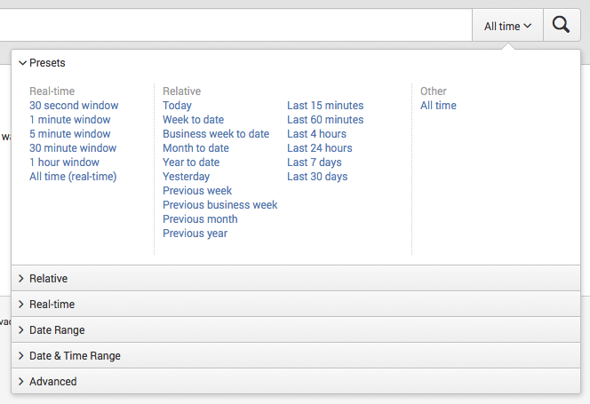
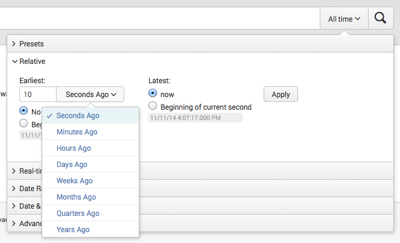
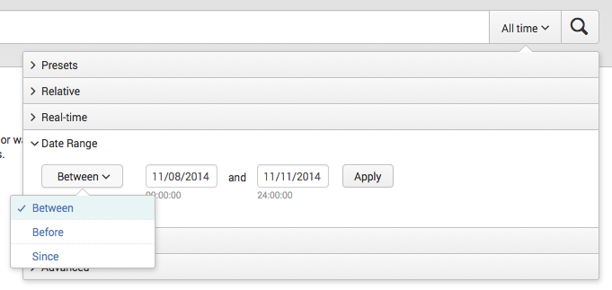
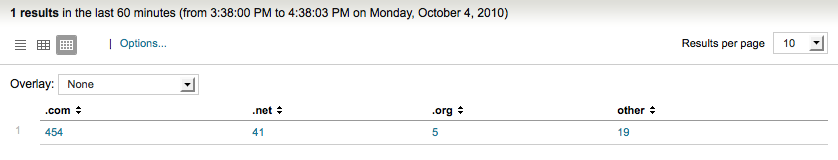
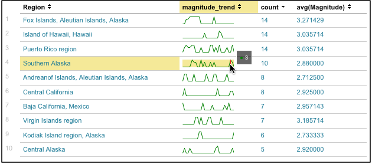
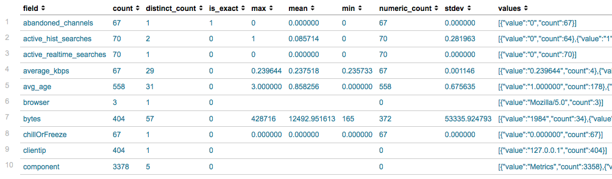

Welcome to the Search Manual
This manual discusses Splunk Search and how to use the Splunk Enterprise search processing language.
If you are new to Splunk Enterprise and search, start with the "Search Tutorial". The Search Tutorial introduces you to the Search and Reporting app and takes you through adding data, searching your data, and building simple reports and dashboards.
Before you can start using Splunk search,
- Add data to your Splunk instance. See how to get data into Splunk in the "Getting Data In Manual".
- Understand how indexing works in Splunk Enterprise. See how Splunk processes data in the "Managing Indexers Manual".
- Understand fields and knowledge objects, such as host, source type, and event type. See the "Knowledge Manager Manual".
For the catalog of search commands and arguments that make up the Splunk Enterprise search processing language, see the Search Reference Manual.
Distributed search provides a way to scale your deployment by separating the search management and presentation layer from the indexing and search retrieval layer. For an introduction to distributed search, see "Distributed Search Manual".
Make a PDF
For a PDF version of this manual, click the red Download the Search Manual as PDF link below the table of contents on the left side of this page. A PDF version of the manual is generated on the fly for you, and you can save it or print it out to read later.
Using Splunk Search
What's in Splunk Search
This topic discusses the Search views that are part of the Splunk Search & Reporting app, which is the interface you use to interact with your data.
The unified search and reporting experience also makes it easier for you to author and edit your reports. You can read more about creating and editing reports in the Reporting Manual.
The Search dashboard
Before you run a search, the Search dashboard will include:
- The search bar. Use the search bar to run your searches in Splunk Web. Just type in your search string and hit enter or click the spyglass icon to the right of the time range picker.
- The time range picker. Use the time range picker to specify the time period over which to retrieve events. The time range picker has many preset time ranges that you can select from, but you can also enter a custom time range.
- How to search. This panel links you to the Search Tutorial and Search Manual to help you learn about searches.
- What to search. This panel displays a summary of the data that is installed on this Splunk instance and that you are authorized to view. If you click on the Data Summary button, a window opens with tabs for the Hosts, Sources, Sourcetypes in your data.
The New Search dashboard
Running a new search takes you to the New Search dashboard. In this view, the search bar and time range picker are also available. The dashboard updates with many more elements such as search action buttons, a search mode selector, counts of events, a job status bar, and results tabs for Events, Patterns, Statistics, and Visualizations.
Read more about the elements of the New Search dashboard in the following topics.
Perform actions on running searches
Splunk provides a set of controls that you can use to manage "in process" searches and create reports and dashboards.
Control search job progress
After you launch a search, you can access and manage information about the search's job without leaving the Search page. Once your search is running, paused, or finalized, click Job and choose from the available options there.
You can:
- Edit the job settings. Select this to open the Job Settings dialog, where you can change the job's read permissions, extend the job's lifespan, and get a URL for the job that you can use to share the job with others or put a link to the job in your browser's bookmark bar.
- Send the job to the background. Select this if the search job is slow to complete and you would like to run the job in the background while you work on other Splunk activities (including running a new search job).
- Inspect the job. Opens a separate window and display information and metrics for the search job via the Search Job Inspector. You can select this action while the search is running or after it completes. For more information, see "View search job properties with the Search Job Inspector" in the Knowledge Manager Manual.
- Delete the job. Use this to delete a job that is currently running, is paused, or which has finalized. After you have deleted the job you can still save the search as a report.
For more information, see "About jobs and job management" in the Knowledge Manager Manual.
Change the search mode
The Search mode controls the search experience. You can set it to speed up searches by cutting down on the event data it returns (Fast mode), or you can set it to return as much event information as possible (Verbose mode). In Smart mode (the default setting) it automatically toggles search behavior based on the type of search you're running.
This is discussed in more detail in the next topic, "Set search mode to adjust your search experience".
Save the results
The Save as menu lists options for saving the results of a search as a Report, Dashboard Panel, Alert, and Event type.
- Report: Save a search as a report to use it again later. You can run the report again on an ad hoc basis by finding the report on the Reports listing page and clicking its name. Read more about how to "Create and edit reports" in the Reporting Manual.
- Dashboard Panel: Use this option to generate a dashboard panel based on your search and add it to a new or existing dashboard. Learn more about dashboards in "Dashboards and Forms" and "About the Dashboard Editor." Both topics are in the Dashboards and Visualizations manual.
- Alert: Define an alert based on your search. Alerts run saved searches in the background (either on a schedule or in real time). When the search returns results that meet a condition you have set in the alert definition, the alert is triggered. For more information, see "About alerts" in the Alerting Manual.
- Event Type: Classify events that have common characteristics. If the search does not include a pipe operator or a subsearch , you can use this to save it as an event type. For more information, see "About event types" and "Define and maintain event types in Splunk Web" in the Knowledge Manager manual.
Other search actions
Between the job progress controls and search mode selector are three buttons which enable you to Share, Export, and Print the results of a search.
- Click Share to share the job. When you select this, the job's lifetime is extended to 7 days and read permissions are set to Everyone.
- Click Export to export the results. You can select to output to CSV, raw events, XML, or JSON and specify the number of results to export.
- Click Print to send the results to a printer that has been configured.
Additionally, use the Close button next to Save as menu to cancel the search and return to Splunk Home.
Set search mode to adjust your search experience
You can use the search mode selector to provide a search experience that fits your needs.
The search mode selector is at the upper right-hand corner of the search bar. The available modes are Smart (default), Fast, and Verbose:
Depending on how you set it you can see all the data available for your search (at the expense of longer search times), or you can speed up and streamline your search in certain ways.
The Fast and Verbose modes represent the two ends of the search mode spectrum. The default Smart mode switches between them depending on the type of search that you are running. Whenever you first run a saved search, it will run in Smart mode.
Selecting the Fast mode
Fast mode prioritizes the performance of the search and does not return nonessential field or event data. This means that the search returns what is essential and required.
- Disables field discovery. Field discovery is the process Splunk uses to extract fields aside from default fields such as
host,source, andsourcetype. This means that Splunk only returns information on default fields and fields that are required to fulfill your search (if you are searching on certain fields, it will extract those fields). - Only depicts search results as report result tables or visualizations when you run a reporting search (a search that includes transforming commands). Under the Fast mode you'll only see event lists and see event timelines for searches that do not include transforming commands.
For more information about what Splunk Enterprise does when field discovery is enabled or disabled, see "When Splunk Enterprise extracts fields" in the Knowledge Manager Manual.
Selecting the Verbose mode
Verbose mode returns all of field and event data it possibly can, even if it means the search takes longer to complete, and even if the search includes reporting commands.
- Discovers all of the fields it can. This includes default fields, automatic search-time field extractions, and all user-defined index-time and search-time field extractions. Discovered fields are displayed in the left-hand fields sidebar in the Events results tab.
- Returns an event list view of results and generates the search timeline. It also generates report tables and visualizations if your search includes reporting commands.
You may want to use the Verbose mode if you're putting together a transforming search but aren't exactly sure what fields you need to report on, or if you need to verify that you are summarizing the correct events.
Note: Reports cannot benefit from report acceleration when you run them in Verbose mode. If you enable report acceleration for a report and it has been running faster as a result, be aware that if you switch the mode of the search to Verbose it will run at a slower, non-accelerated pace.
Report acceleration is designed to be used with slow-completing searches that have over 100k events and which utilize transforming commands. For more information see "Accelerate reports," in the Reporting Manual.
Selecting the Smart mode
All reports run in Smart mode, the default search mode, after they are first created. By design, Smart mode returns the best results for whatever search or report you run. If you search on events, you get all the event information you need. If your run a transforming search, Splunk Enterprise favors speed over thoroughness and brings you straight to the report result table or visualization.
When you run a Smart mode search that does not include transforming commands, the search behaves as if it were in Verbose mode.
- Discovers all the fields it can.
- Generates the full event list and event timeline. No event table or visualization will appear because you need transforming commands to make those happen.
When you run a Smart mode search that includes transforming commands, the search behaves as if it were in Fast mode.
- Disables field discovery.
- Does not waste time generating the event list and event timeline and jumps you straight to the report result table or visualization.
For more information about transforming commands and transforming searches, see "About reporting commands" in the Search Manual.
About the search assistant
The Splunk Search Processing Language is extensive and includes many search commands, arguments, and functions. You might have a hard time forming a search because you are not familiar with all the commands and you don't know what information has been extracted from your data.
Use search assistant to see your data as you build a search
When you're building a search, you don't need to know which search commands and arguments you want to use before forming a search because the search assistant will suggest them for you.
Search assistant shows you typeahead, or contextual matches and completions for each keyword as you type it into the search bar. These contextual matches are based on what's in your data. The entries under matching terms update as you continue to type because the possible completions for your term change as well.
Search assistant also displays the number of matches for the search term. This number gives you an idea of how many search results Splunk will return. If a term or phrase doesn't exist in your data, you won't see it listed in search assistant.
Change settings for the search assistant
The search assistant is a Python endpoint called by the search bar that returns html to display in a panel that slides down from the search bar. The search assistant gets its description and syntax information from searchbnf.conf, which defines all the Splunk search commands and their syntax. But, it also uses fields.conf to suggest fields for autocomplete and savedsearches.conf to inform users when their search is similar to an existing saved search.
You can control the behavior of the search assistant with UI settings in the SearchBar module. These settings define whether to open the search assistant by default (autoOpenAssistant), to use typeahead (useTypeahead), to show command help (showCommandHelp), to show search history (showCommandHistory), and to show field information (showFieldInfo). For more information about each of these modules, refer to the " Module Reference".
Search Overview
About search
This chapter discusses search, the structure of a Splunk search, the search language and its syntax, some tools to help construct and troubleshoot your search, and some tips for writing better searches.
Types of searches
Before delving into the language and syntax of search, you should ask what you are trying to accomplish. Generally, after getting data into Splunk, you want to:
- Investigate to learn more about the data you just indexed or to find the root cause of an issue.
- Summarize your search results into a report, whether tabular or other visualization format.
Because of this, you might hear us refer to two types of searches: Raw event searches and transforming searches.
Raw event searches
Raw event searches are searches that just retrieve events from an index or indexes and are typically done when you want to analyze a problem. Some examples of these searches include: checking error codes, correlating events, investigating security issues, and analyzing failures. These searches do not usually include search commands (except search, itself), and the results are typically a list of raw events.
- Read more about raw event searches in the "Retrieve events" chapter of this manual, beginning with "About retrieving events".
Transforming searches
Transforming searches are searches that perform some type of statistical calculation against a set of results. These are searches where you first retrieve events from an index and then pass them into one or more search commands. These searches will always require fields and at least one of a set of statistical commands. Some examples include: getting a daily count of error events, counting the number of times a specific user has logged in, or calculating the 95th percentile of field values.
- Read more about what you can do with search commands in "About the search language".
- Read more about the structure of a search in "About the search processing language syntax".
- Read more about using subsearches to filter results in "About subsearches".
- Read more about transforming searches and commands in the "Report on Search Results" chapter of this manual, beginning with "About transforming commands and searches".
Information density
Whether you're retrieving raw events or building a report, you should also consider whether you are running a search for sparse or dense information:
- Sparse searches are searches that look for single event or an event that occurs infrequently within a large set of data. You've probably heard these referred to as 'needle in a haystack' or "rare term" searches. Some examples of these searches include: searching for a specific and unique IP address or error code.
- Dense searches are searches that scan through and report on many events. Some examples of these searches include: counting the number of errors that occurred or finding all events from a specific host.
Search and knowledge
As you search, you may begin to recognize patterns and identify more information that could be useful as searchable fields. You can configure Splunk to recognize these new fields as you index new data or you can create new fields as you search. Whatever you learn, you can use, add, and edit this knowledge about fields, events, and transactions to your event data. This capturing of knowledge helps you to construct more efficient searches and build more detailed reports.
Search with Splunk Web, the CLI, or REST API
Most likely, you'll run a search from Splunk Web in the Search app. But, you might also run a search from the command line interface (CLI) or the REST API. Which tool is best can sometimes depend on what you want from your search.
When you search with Splunk Web, you're using the Search app, and you can control the search experience by selecting a search mode (Fast, Verbose, Smart). Depending on the mode you select, Splunk automatically discovers and extracts fields other than the default fields, returns results as an events list or a table, and runs the calculations required to generate the event timeline. Calculating the event timeline is very expensive because it creates buckets and keeps the statistics for events and fields in a dispatch directory such that it is available when the user clicks a bar on the timeline.
- Read more about how to "Set search mode to adjust your search experience" in this chapter.
When you run a search through the CLI or use the search jobs endpoint in the REST API to create a search, it goes directly to splunkd without going through splunkweb. These searches can complete much faster than the searches in Splunk Web because Splunk does not calculate or generate the event timeline. Instead, the results of a CLI search display as a raw events list or a table, depending on the type of search.
- Read more "About CLI searches" in the Search Reference Manual.
- Read about "Creating searches using the REST API" in the REST API Reference Manual.
About the Search Processing Language
When you hear about the Search Processing Language (SPL), you may have heard the terms distributable, streaming, generating, and transforming used to describe the types of search commands. This topic describes what these terms mean and lists the commands that fall into each category.
Search Processing Language components
The Search Processing Language encompasses all the search commands and their functions, arguments and clauses. Search commands tell Splunk Enterprise what to do to the events you retrieved from the indexes. For example, you need to use a command to filter unwanted information, extract more information, evaluate new fields, calculate statistics, reorder your results, or create a chart.
Some search commands have functions and arguments associated with them. Use these functions and their arguments to specify how the commands act on your results and/or which fields they act upon. For example, use functions to format the data in a chart, describe what kind of statistics to calculate, and specify what fields to evaluate. Some commands also use clauses to specify how to group your search results.
Types of search commands
There are four broad categorizations for all the search commands: distributable streaming, stateful streaming, transforming, generating.
Distributable streaming
A streaming command operates on each event returned by a search. A distributable streaming command runs on the indexer and can be applied to subsets of indexed data in a parallel manner. For example, the regex command is streaming; it extracts fields and adds them to events at search time.
Distributable streaming commands include: convert, eval, extract (kv), fields, mvexpand, multikv, rename, regex, replace, rex, search, strcat, tags, typer, and where.
Other commands can be streaming when they are used with certain options.
-
binandbucket, when they are used with aspanoption. -
lookup, when used withlocal=f.
Centralized streaming
A centralized streaming command applies a transformation to each event returned by a search, but unlike distributable streaming commands, it only works on the search head. You might also hear the term "stateful streaming" to describe these commands.
Centralized streaming commands include: head, streamstats, some modes of dedup, and some modes of cluster.
Transforming
A transforming command orders the results into a data table, that is, it "transforms" the specified cell values for each event into numerical values that Splunk can use for statistical purposes. Transforming commands are not streaming. Also, they are required to transform search result data into the data structures required for visualizations such as column, bar, line, area, and pie charts.
Transforming commands include: chart, timechart, stats, top, rare, contingency, highlight, typer, and addtotals when it is used to calculate column totals (not row totals).
Generating
A generating command is one that fetches information without any transformations. Generating commands are either event-generating (distributable or centralized) or report-generating and, depending on which they are, will return an events list or a table of results. Generating commands are usually invoked at the beginning of the search and with a leading pipe. That is, there cannot be a search piped into a generating command. The exception to this is the search command, because it is implicit at the start of a search and does not need to be invoked.
Distributable event-generating commands include: search and metadata.
Centralized event-generating commands include: loadjob, inputcsv, and inputlookup.
Report-generating commands include: dbinspect, datamodel, metadata (although metadata fetches data from all peers, any command run after it will run only on the search head), pivot, and tstats.
Other commands
There are a handful of commands that do not fit into these categories. These commands are non-transforming, not distributable, and not streaming: sort, eventstats, some modes of dedup, and some modes of cluster.
The search processing language syntax
A Splunk search consists of a series of commands that are delimited by pipe (|) characters. The first whitespace-delimited string after each pipe character controls the command used. The remainder of the text for each command is handled in a manner specific to the given command.
This topic discusses an anatomy of a Splunk Search and some of the syntax rules shared by each of the commands and syntax rules for fields and field values.
About the search pipeline
The "search pipeline" refers to the structure of a Splunk search, in which consecutive commands are chained together using a pipe character, "|". The pipe character tells Splunk to use the output or result of one command (to the left of the pipe) as the input for the next command (to the right of the pipe). This enables you to refine or enhance the data at each step along the pipeline until you get the results that you want.
A Splunk search starts with search terms at the beginning of the pipeline. These search terms are keywords, phrases, boolean expressions, key/value pairs, etc. that specify which events you want to retrieve from the index(es). See "About retrieving events".
The retrieved events can then be passed as inputs into a search command using a pipe character. Search commands tell Splunk what to do to the events after you retrieved them from the index(es). For example, you might use commands to filter unwanted information, extract more information, evaluate new fields, calculate statistics, reorder your results, or create a chart. Some commands have functions and arguments associated with them. These functions and their arguments enable you to specify how the commands act on your results and which fields to act on; for example, how to create a chart, what kind of statistics to calculate, and what fields to evaluate. Some commands also enable you to use clauses to specify how you want to group your search results.
- For more information about what you can do with search commands, see "About the search processing language".
- For a list of search commands, see the Search Reference manual and the individual search command reference topic for its syntax and usage.
The anatomy of a search
To better understand how search commands act on your data, it helps to visualize all your indexed data as a table. Each search command redefines the shape of your table.
For example, let's take a look at the following search.
sourcetype=syslog ERROR | top user | fields - percent The Disk represents all of your indexed data and it's a table of a certain size with columns represent fields and rows representing events. The first intermediate results table shows fewer rows--representing the subset of events retrieved from the index that matched the search terms "sourcetype=syslog ERROR". The second intermediate results table shows fewer columns, representing the results of the top command, "top user", which summarizes the events into a list of the top 10 users and displays the user, count, and percentage. Then, "fields - percent" removes the column that shows the percentage, so you are left with a smaller final results table.
Quotes and escaping characters
Generally, you need quotes around phrases and field values that include white spaces, commas, pipes, quotes, and/or brackets. Quotes must be balanced, an opening quote must be followed by an unescaped closing quote. For example:
- A search such as
error | stats countwill find the number of events containing the string error. - A search such as
... | search "error | stats count"would return the raw events containing error, a pipe, stats, and count, in that order.
Additionally, you want to use quotes around keywords and phrases if you don't want to search for their default meaning, such as Boolean operators and field/value pairs. For example:
- A search for the keyword AND without meaning the Boolean operator:
error "AND" - A search for this field/value phrase:
error "startswith=foo"
The backslash character (\) is used to escape quotes, pipes, and itself. Backslash escape sequences are still expanded inside quotes. For example:
- The sequence \| as part of a search will send a pipe character to the command, instead of having the pipe split between commands.
- The sequence \" will send a literal quote to the command, for example for searching for a literal quotation mark or inserting a literal quotation mark into a field using rex.
- The \\ sequence will be available as a literal backslash in the command.
If Splunk does not recognize a backslash sequence, it will not alter it.
- For example \s in a search string will be available as \s to the command, because \s is not a known escape sequence.
- However, in the search string \\s will be available as \s to the command, because \\ is a known escape sequence that is converted to \.
Asterisks, *, can not be searched for using a backslash to escape the character. Splunk treats the asterisk character as a major breaker. Because of this, it will never be in the index. If you want to search for the asterisk character, you will need to run a post-filtering regex search on your data:
index=_internal | regex ".*\*.*"For more information about major breakers, read "Overview of event processing" in the Getting Data in Manual.
Examples
Example 1: myfield is created with the value of 6.
... | eval myfield="6"Example 2: myfield is created with the value of ".
... | eval myfield="\""Example 3: myfield is created with the value of \.
... | eval myfield="\\"Example 4: This would produce an error because of unbalanced quotes.
... | eval myfield="\"Fields
Events and results flowing through the Splunk search pipeline exist as a collection of fields. Fields can fundamentally come from the Splunk index -- _time as the time of the event, source as the filename, etc -- or can be derived from a wide variety of sources at search time -- eventtypes, tags, regex extractions using the rex<code>/ command, totals coming from the <code>stats command, etc.
For a given event, a given field name might be present or absent. If present, it might contain a single value or multiple values. Each value is a text string. Values might be of positive length (a string, or text) or zero length (empty strings, or "").
Numbers, for example, are strings that contain the number. For example, a field containing a value of the number 10 contains the characters 1 and 0: "10". Commands that take numbers from values automatically convert them internally to numbers for calculations.
- Null field
- A null field is not present on a particular result or event. Other events or results in the same search might have values for this field. For example, the
fillnullcommand adds a field and default value to events or results that lack fields present on other events or results in the search.
- Empty field
- An empty field is shorthand for a field that contains a single value that is the empty string.
- Empty value
- A value that is the empty string, or "". You can also describe this as a zero-length string.
- Multvalue field
- A field that has more than one value. All non-null fields contain an ordered list of strings. The common case is that this is a list of one value. When the list contains more than one entry, it is a multivalue field. See "Manipulate and evaluate fields with multiple values" in the Search Manual.
Write better searches
This topic discusses some causes of slow searches and suggests simple rules of thumb to help you write searches that will run more efficiently. Many factors can affect the speed of your searches: the volume of data that you are searching, how you've constructed your searches, whether or not you've planned your deployment sufficiently to handle the number of users running searches at the same time, and so on. The key to optimizing your search speed is to make sure that Splunk Enterprise does not do more work than necessary.
Types of searches
The recommendations for optimizing searches vary depending on the type of search that you run and the characteristics of the data you're searching. In general, we describe searches based on what you are trying to do: retrieve events or generate reports. If the events you want to retrieve occur frequently in the dataset, we call it a dense search. If the events you want to retrieve are rare in the dataset, we call it a sparse search.
Read more about "About search".
Raw event searches
Raw event searches return events from a Splunk index without any additional processing to the events that are retrieved. The best rule of thumb to follow when retrieving events from the index is to be specific about the events that you want to retrieve. You can do this with keywords and field/value pairs that are unique to the events. One thing to keep in mind is that sparse searches against large volumes of data will take longer than dense searches against the same data set.
Report-generating searches
Report-generating searches perform additional processing on events after they've been retrieved from an index. This processing can include filtering, transforming, and other operations using one or more statistical functions against the set of results. Because this processing occurs in memory, the more restrictive and specific you are when specifying the events to retrieve from disk, the faster the search will be.
Tips for tuning your searches
In most cases, your search is slow because of the complexity of your query to retrieve events from index. For example, if you search contains extremely large OR lists, complex subsearches (which break down into OR lists), and types of phrase searches, it will take longer to process. This section discusses some tips for tuning your searches so that they are more efficient.
Be more specific. That is, narrow down your search as much as possible from the start and limit the data that has to be pulled from disk to an absolute minimum:
- Add strings which only exist in your desired events.
- Restrict your search to the specific host, index, source, source type, or Splunk server whenever possible. Read more about using fields in your searches in the next section.
- Limit your search to the specific time window you need. For example, to see what might have led to errors a few minutes ago, search within the last 15 minutes '-15min' or last hour '-1hr', not the last week '-1w'. Read more about time ranges in search.
- Limit the quantity of data retrieved. You can do this easily using the head command:
sourcetype=access_* | head 1000.
Avoid using NOT expressions when possible. That is, instead of using (NOT host=d NOT host=e) or (host!=d OR host!=e), use (host=a OR host=b OR host=c).
If you rarely search across more than one type of data at a time, partition your different types of data into separate indexes and restrict your searches to the specific index. For example, store Web access data in one index and firewall data in another. This is recommended for sparse data, which may otherwise be buried in a large volume of unrelated data. Read more about ways to set up multiple indexes and how to search different indexes.
Use fields in your searches
Searches with fields are faster when they use fields that have already been extracted (indexed fields) instead of fields extracted at search time.
Use indexed and default fields for improved search efficiency
Use indexed and default fields whenever you can to help search or filter your data efficiently. At index time, Splunk extracts a set of default fields that are common to each event; these fields include host, source, and sourcetype. Use these fields to filter your data as early as possible in the search so that processing is done on a minimum amount of data.
For example, if you're building a report on web access errors, search for those specific errors before the reporting command:
sourcetype=access_* (status=4* OR status=5*) | stats count by statusDisable field discovery to improve search performance
If you don't need additional fields in your search, set Search Mode to a setting that disables field discovery to improve search performance in the timeline view or use the fields command to specify only the fields that you want to see in your results.
The tradeoff to disabling field discovery is that doing so prevents automatic field extraction, except for fields that are required to fulfill your search (such as fields that you are specifically searching on) and default fields such as _time, host, source, and sourcetype. The search runs faster because Splunk is no longer trying to extract every field possible from your events.
Search mode is set to Smart by default. Set it to Verbose if you are running searches with reporting commands, don't know what fields exist in your data, and think you might need them to help you narrow down your search in some way.
See "Set search mode to adjust your search experience," in this manual.
Also see the topics about fields and field extractions in the Knowledge Manager Manual and about the fields command in the Search Reference Manual.
Summarize your data
It can take a lot of time to search through very large data sets. If you regularly generate reports on large volumes of data, use summary indexing to pre-calculate the values that you use most often in your reports. Schedule saved searches to collect metrics on a regular basis, and report on the summarized data instead of on raw data.
Read more about how to use summary indexing for increased reporting efficiency.
Use the Search Job Inspector
The Search Job Inspector is a tool you can use both to troubleshoot the performance of a search and to determine which phase of the search takes the greatest amounts of time. It dissects the behavior of your searches to help you understand the execution costs of knowledge objects such as event types, tags, lookups, search commands, and other components within the search.
Read more about how to use the search job inspector.
Retrieve Events
About retrieving events
When you search in Splunk, you're using the search command to match search terms against segments of your event data. These search terms are keywords, phrases, boolean expressions, field name and value pairs, etc. that specify which events you want to retrieve from the index(es). Read more about how to "Use the search command" to retrieve events.
Your event data may be partitioned into different indexes and across distributed search peers. Read more about how to search across multiple indexes and servers in "Retrieve events from indexes and distributed search peers".
Events are retrieved from an index(es) in reverse time order. The results of a Splunk search are ordered from most recent to least recent by default. You can retrieve events faster if you filter by time, whether you are using the timeline to zoom in on clusters of events or applying time ranges to the search itself. For more information, read how to "Use the timeline to investigate events" and "About time ranges in search".
Events, event data, and fields
We generally use the phrase event data to refer to your data after it has been added to Splunk's index. Events, themselves, are a single record of activity or instance of this event data. For example, an event might be a single log entry in a log file. Because Splunk separates individual events by their time information, an event is distinguished from other events by a timestamp.
Here's a sample event:
172.26.34.223 - - [01/Jul/2005:12:05:27 -0700] "GET /trade/app?action=logout HTTP/1.1" 200 2953
Events contain pairs of information, or fields. When you add data and it gets indexed, Splunk automatically extracts some useful fields for you, such as the host the event came from and the type of data source it is.
Use the search command to retrieve events
At the beginning of a search pipeline, the search command is implied, even though you do not explicitly invoke it.
Use keywords, phrases, fields, boolean expressions, and comparison expressions to specify exactly which events you want to retrieve from a Splunk index(es). By default, when you search with keywords and phrases, Splunk retrieves events by matching against the raw event field, _raw, in your data. When you start adding search modifiers, such as fields like _time and tag, you're also matching against pieces of information that have been extracted from the _raw field.
Keywords, phrases, and wildcards
When searching for strings, which includes keywords and quoted phrases (or anything that's not a search modifier), Splunk searches the _raw field for the matching events or results. Some examples of keywords and phrases are:
weberrorweb error"web error"Note that the search for the quoted phrase "web error" is not that same as the search before it. When you search for web error, Splunk returns events that contain both "web" and "error". When you search for "web error", Splunk only returns events that contain the phrase "web error".
Use the asterisk wildcard, *, to match an unrestricted number of characters in a string. Searching for * by itself means "match all" and retrieves all events up to the maximum limit. Searching for * as part of a string matches based on that string. For example:
-
my*matches myhost1, myhost.ny.mydomain.com, myeventtype, etc. -
*hostmatches myhost, yourhost, etc. -
*host*matches host1, myhost3, yourhost27.yourdomain.com, etc
The more specific your search terms are to the events you want to retrieve, the better chance you have at matching them. For example, searching for "access denied" is always better than searching for "denied". If 90% of your events have the word ‘error’ but only 5% have the word ‘sshd’ (and the events you want to find require both of these words), include ‘sshd’ in the search to make it more efficient.
Boolean expressions
Splunk supports the Boolean operators: AND, OR, and NOT; the operators have to be capitalized. The AND operator is always implied between terms, that is: web error is the same as web AND error.
Splunk evaluates Boolean expressions in the following order:
1. Expressions within parentheses.
2. OR clauses.
3. AND or NOT clauses.
A=1 AND B=2 OR C=3A=1 AND ( B=2 OR C=3 )You can use parentheses to group Boolean expressions.
web client error NOT (403 OR 404)(A=1 AND B=2 ) OR C=3 web client error NOT (403 OR 404)Note: Inclusion is generally better than exclusion. Searching for "access denied" will yield faster results than NOT "access granted".
Field expressions
When you add data, Splunk extracts pairs of information and saves them as fields. Some fields are common to all events, but others are not. Adding fields to you search term gives you a better chance of matching specific events.
If you're searching web access logs for specific HTTP status errors, instead of searching for "web error 404", you can use fields to search for:
status=404Read more about how to "Use fields to retrieve events."
Use comparison operators to match field values
You can use comparison operators to match a specific value or a range of field values.
| Operator | Example | Result |
|---|---|---|
| = | field=foo | Multivalued field values that exactly match "foo". |
| != | field!=foo | Multivalued field values that don't exactly match "foo". |
| < | field<x | Numerical field values that are less than x. |
| > | field>x | Numerical field values that are greater than x. |
| <= | field<=x | Numerical field values that are less than and equal to x. |
| >= | field>=x | Numerical field values that are greater than and equal to x. |
For example, to find events that have a delay field that is greater than 10:
delay > 10Use CASE() and TERM() to match phrases
If you want to search for a specific term or phrase in your Splunk index, use the CASE() or TERM() directives to force Splunk to do an exact match of the entire term.
- CASE forces Splunk to search for case-sensitive matches for terms and field values.
- TERM forces Splunk to match whatever is inside the parentheses as a single term in the index, even if it contains characters that are usually recognized as minor segmenters, such as periods or underscores.
When you search for a term that contains minor segmenters, Splunk defaults to treating it as a phrase: It searches for the conjunction of the subterms (the terms between minor breaks) and post-filters the results. For example, when you search for the IP address 127.0.0.1, Splunk searches for: 127 AND 0 AND 1
This search is not very efficient if the conjunction of these subterms is common, even if the whole term itself is not common.
If you search for TERM(127.0.0.1), Splunk treats the IP address as a single term to match in your raw data.
TERM is more useful for cases where the term contains minor segmenters and is bounded by major segmenters, such as spaces or commas. In fact, TERM does not work for terms that are not bounded by major breakers. This is illustrated in the examples below.
For more information about how Splunk breaks events up into searchable segments, read "About segmentation" in the Getting Data In Manual.
Examples
TERM(127.0.0.1) works for raw data that looks like:
127.0.0.1 - admin
However, it fails for data that looks like:
ip=127.0.0.1 - user=admin
This is because "=" is a minor breaker and the IP address portion of the event is indexed as: ip, 127, 0, 1, ip=127.0.0.1
If your data looks like this:
ip 127.0.0.1 - user admin
TERM(user admin) fails to return results. The space is a major breaker and Splunk would not index the phrase "user admin" as a single term.
Use fields to retrieve events
Fields are searchable name/value pairings in event data. All fields have names and can be searched with those names. Searches with field expressions are more precise (and therefore more efficient) than searches using only keywords and quoted phrases.
Look at the following search:
host=webserverIn this search, host=webserver indicates that you are searching for events with host fields that have values of webserver. When you run this search, Splunk won't retrieve events with different host field values. It also won't retrieve events that contain other fields that share webserver as a value. This means that this search returns a more focused set of results than you might get if you just searched for webserver in the search bar.
For more information, read "About fields" in the Knowledge Manage Manual.
Index-time and search-time fields
As Splunk Enterprise processes event data, it extracts and defines fields from that data, first at index time, and again at search time.
See "Index time versus search time" in the Managing Indexers and Clusters manual.
Field extraction at index time
At index time, Splunk extracts a small set of fields. This set of fields includes default fields, custom indexed fields, and fields indexed from structured data.
Default fields exist in all events. Three important default fields are host, source, and source type. They describe where the event originated. Other default fields include datetime fields, which provide additional searchable granularity to event timestamps. Splunk also automatically adds default fields classified as internal fields.
Custom indexed fields are fields that you have manually configured for index-time extraction. See "Create custom fields at index time" in the Getting Data In manual.
Finally, when Splunk Enterprise indexes structured data, it creates index-time field extractions for the fields that it finds. Examples of structured data include:
- comma-separated value files (CSV)
- tab-separated value files (TSV)
- pipe-separated value files
- JavaScript Object Notation (JSON) data sources
Field extraction at search time
At search time, Splunk Enterprise extracts additional fields, depending on its Search Mode setting and whether or not that setting enables field discovery given the type of search being run.
Search examples
Example 1: Search for events on all "corp" servers for accesses by the user "strawsky". It then reports the 20 most recent events.
host=corp* eventtype=access user=strawskyIn this example, host is a default field, while eventtype and user are additional fields that Splunk may have automatically extracted or that you defined.
In general, an event type is a user-defined field that simplifies search by letting you categorize events. You can save a search as an event type and quickly retrieve those events using the eventtype field. For more information, read "About event types" in the Knowledge Manager Manual.
Example 2: Search for events from the source "/var/www/log/php_error.log".
source="/var/www/log/php_error.log"The source of an event is the name of the file, stream, or other input from which the event originates.
Example 3: Search for all events that have an Apache web access source type.
sourcetype="access_*"The source type of an event is the format of the data input from which it originates. In this search uses a wildcard to match any Apache web access log that begins with "access_". This includes access_common and access_combined (and you might also see access_combined_wcookie).
Example 4: Search corp1 for events that have more than 4 lines, and omit events that contain the term 400.
host=corp1 linecount>4 NOT 400You can use comparison expressions to match field/value pairs. Comparison expressions with "=" and "!=" work with all field/value pairs. Comparison expressions with < > <= >= work only with fields that have numeric values. This example specifies a search for events that have more than 4 lines, linecount>4.
Example 5: Searching with the boolean "NOT" versus the comparison operator "!=" is not the same. The following search returns events where field is undefined (or NULL).
NOT field="value"The following search returns events where field exists and does not have the value "value".
field!="value"In the case where the value in question is the wildcard "*", NOT field=* will return events where field is null/undefined, and field!=* will never return any events.
More about fields
This topic only discussed a handful of searches with fields.
- You can see more examples of searches with the default fields
indexandsplunk_serverin the next topic, "Retrieve events from indexes and distributed search peers". - You can see more search examples "Using default fields" in the Knowledge Manager Manual.
Fields become more important when you start using the Splunk search language to summarize and transform your data into reports. For more information, read "About reporting commands".
Retrieve events from indexes and distributed search peers
You have always been able to create new indexes, add more search peers, and manage where you want to store your data. Additionally, when you have data split across different indexes and distributed search peers, you're not limited to searching one index or server at a time. You can search across multiple indexes and servers at once, using the index and splunk_server fields, respectively.
Specify one or multiple indexes to search
The Splunk administrator can set the default indexes that a user searches. Based on the user's roles and permissions, he may have access to one or many indexes; for example the user may only be able to search main or all public indexes. The user can then specify a subset of these indexes, either an individual index or multiple indexes, to search. For more information about setting up users and roles, see the "About users and roles" chapter in Securing Splunk.
For more information about managing your indexes and setting up multiple indexes, see the "About managing indexes" chapter in the Managing Indexers and Clusters manual.
Control index access via Splunk Web
1. Navigate to Manager > Access controls > Roles.
2. Select the role that the User has been assigned to.
- On the bottom of the next screen you'll find the index controls.
3. Control the indexes that particular role has access to, as well as the default search indexes.
Syntax
You can specify different indexes to search in the same way that you specify field names and values. In this case, the field name is index and the field value is the name of a particular index:
index=<indexname>
index=mai*You can also use parentheses to partition different searches to certain indexes. See Example 3 for details.
Note: When you type "index=" into the search bar, typeahead indicates all the indexes that you can search, based on your roles and permissions settings.
Examples
Example 1: Search across all public indexes.
index=*Example 2: Search across all indexes, public and internal.
index=* OR index=_*Example 3: Partition different searches to different indexes; in this example, you're searching three different indexes: main, _internal, and mail. You want to see events that match "error" in all three indexes; but also, errors that match "warn" in main or "failed" in mail.
(index=main (error OR warn)) OR (index=_internal error) OR (index=mail (error OR failed))Example 4: Search across multiple indexes on different distributed Splunk servers.
(splunk_server=local index=main 404 ip=10.0.0.0/16) OR (splunk_server=remote index=mail user=admin)Search across one or more distributed search peers
When performing a distributed search from a search head, you can restrict your searches to specific search peers (also known as "indexer nodes") by default and in your saved and scheduled searches. The names of your Splunk search peers are saved as values in the "splunk_server" field. For more information about distributed search, see "About distributed search" in the Distributed Search manual.
If no search peer is specified, your search accesses all search peers you have permission to access. The default peers that you can access are controlled by the roles and permissions associated with your profile and set by your Splunk admin. For more information, see "About users and roles" in Securing Splunk.
The ability to restrict your searches to specific peers can be useful when there is high latency to certain search peers and you do not want to search them by default. When you specify one or more peers, those are the only servers that are included in the search.
You can specify different peers to search in the same way that you specify other field names and values. In this case, the field name is "splunk_server" and the field value is the name of a particular distributed peer:
splunk_server=<peer_name>
Note: You can use the value "local" to refer to the Splunk instance that you are searching from; in other words, the search head itself.
splunk_server=localKeep in mind that field names are case sensitive; Splunk will not recognize a field name if the case doesn't match.
Examples
Example 1: Return results from specified search peers.
error (splunk_server=NYsplunk OR splunk_server=CAsplunk) NOT splunk_server=TXsplunkExample 2: Search different indexes on distributed search peers "foo" or "bar".
(splunk_server=foo index=main 404 ip=10.0.0.0/16) OR (splunk_server=bar index=mail user=admin)Not finding the events you're looking for?
When you add an input to Splunk, that input gets added relative to the app you're in. Some apps write input data to their own specific index (for example, the Splunk App for Unix and Linux uses the 'os' index).
If you're not finding data that you're certain is in Splunk, be sure that you're looking at the right index. You might need to add an app-specific index to the list of default indexes for the role you're using. For more information about roles, refer to the topic about roles in Securing Splunk.
Classify and group similar events
An event is not the same thing as an event type. An event is a single instance of data — a single log entry, for example. An event type is a classification used to label and group events.
The names of the matching event types for an event are set on the event, in a multivalue field called eventtype. You can search for these groups of events (for example, SSH logins) the same way you search for any field value.
This topic discusses how to classify events (save a search as an event type) and search for tagged fields. For more information about events, how Splunk recognizes them, and what it does when it processes them for indexing, see the "Overview of event processing" topic in the Getting Data In manual.
Important: You cannot save a search pipeline as an event type; that is, when saving a search as an event type, it cannot include a search command.
Save a search as a new event type
When you search your event data, you're essentially weeding out all unwanted events. Therefore, the results of your search are events that share common characteristics, and you can give them a collective name.
For example, if you often search for failed logins on different host machines, you can save an eventtype for the events and call it failed_login:
"failed login" OR "FAILED LOGIN" OR "Authentication failure" OR "Failed to authenticate user"To save this search as an eventtype:
1. Click Create and select Event Type
2. In Save As Event Type, give your search a Name. For our search example, we'll name it "failed_login".
If necessary, you can modify the Search string field, which should be populated automatically with the search you just ran.
You can also optionally add a list of tags that should be applied to the event type in the Tag(s) field. For more about this see the subsection about tagging event types, below.
3. Click "Save" to save your event type name.
Now, you can quickly search for all the events that match this event type the same way you can search for any field.
For example, you may be interested it in finding failed logins on specific host machines:
host=target eventtype=failed_loginOr you may want to investigate a suspicious user's activities:
user=suspicious eventtype=failed_loginUse typelearner to discover new event types
Pass any of your searches into the typelearner command to see Splunk's suggestions for event types. By default, typelearner compares the punctuation of the events resulting from the search, grouping those that have similar punctuation and terms together.
You can specify a different field for Splunk to group the events; typelearner works the same way with any field. The result is a set of events (from your search results) that have this field and phrases in common.
For more information and examples, see "typelearner" in the search command reference.
Use tags to group and find similar events
In your data, you might have groups of events with related field values. To help you search more efficiently for these groups of fields, you can assign tags to their field values. You can assign one or more tags to any extracted field (including event type, host, source, or source type).
Event types can have one or more tags associated with them. You can add these tags while you save a search as an event type and from the event type manager, located in Manager > Event types. From the list of event types in this window, select the one you want to edit.
After you add tags to your event types, you can search for them in the same way you search for any tag. Let's say you saved a search for firewall events as the event type firewall_allowed, and then saved a search for login events as the event type login_successful. If you tagged both of these event types with allow, all events of either of those event types can be retrieved by using the search:
tag::eventtype="allow"You can tag field/value pairs. You can also alias field names. For more information about using tags, see the "Tag and alias field values in Splunk Web" topic in the Knowledge Manager Manual.
Search for tagged field values
There are two ways to search for tags. If you are searching for a tag associated with a value on any field, you can use the following syntax:
tag=<tagname>
Or, if you are looking for a tag associated with a value on a specific field, you can use the following syntax:
tag::<field>=<tagname>
Use wildcards to search for tags
You can use the asterisk (*) wildcard when searching keywords and field values, including for eventtypes and tags.
For example, if you have multiple event-type tags for various types of IP addresses, such as IP-src and IP-dst, you can search for all of them with:
tag::eventtype=IP-*If you wanted to find all hosts whose tags contain "local", you can search for the tag:
tag::host=*local*Also, if you wanted to search for the events with eventtypes that have no tags, you can search for the Boolean expression:
NOT tag::eventtype=*Use the timeline to investigate events
The timeline is a visual representation of the number of events that occur at each point in time. It shows the distribution of events over time. Mouseover a bar to see the count of events. Click on a bar to drill-down to that time range. Drilling down in this way does not run a new search, it just filters the results from the previous search. You can use the timeline to highlight patterns or clusters of events or investigate peaks (spikes in activity) and lows (possible server downtime) in event activity.
Change the timeline format
The timeline is located in the Events tab above the events listing. It shows the count of events over the time range that the search was run. Here, the timeline shows web access events over the Previous business week.
Format options are located in the Format Timeline menu:
You can hide the timeline (Hidden) and display a Compact or Full view of it. You can also toggle the timeline scale between linear (Linear Scale) or logarithmic (Log Scale).
When Full is selected, the timeline is taller and displays the count on the y-axis and time on the x-axis.
Zoom in and zoom out to investigate events
Zoom and selection options are located above the timeline. At first, only the Zoom Out option is available.
The timeline legend is on the top right corner of the timeline. This indicates the scale of the timeline. For example, 1 minute per column indicates that each column represents a count of events during that minute. Zooming in and out changes the time scale. For example, if you click Zoom Out the legend will indicate that each column now represents an hour instead of a minute.
When you mouse over and select bars in the timeline, the Zoom to Selection or Deselect options become available.
Mouse over and click on the tallest bar or drag your mouse over a cluster of bars in the timeline. The events list updates to display only the events that occurred in that selected time range. The time range picker also updates to the selected time range. You can cancel this selection by clicking Deselect.
When you Zoom to Selection, you filter the results of your previous search for your selected time period. The timeline and events list update to show the results of the new search.
You cannot Deselect after you zoomed into a selected time range. But, you can Zoom Out again.
Run a secondary search on event details
After running a search that returns events in the Events tab, click on parts of those events to run different kinds of secondary searches that use the event detail that you have selected.
In the Events tab you can run a secondary search when you click on these parts of an event:
- Segment (can be a connected string of segments)
- Field value
- Tag
- Timestamp
Secondary searches for field values, tags, and segments
The secondary searches can perform the following actions for fields, tags, and event segments.
| Secondary search action | Description | Result |
|---|---|---|
| Add to search | Add a focus on the selected event detail to the original search and run it. Transforming search commands and anything following them are discarded. | A dataset similar to the one from the original search, filtered to include only events that have the selected field, tag, or segment(s). |
| Exclude from search | Add an exclusion of the selected event detail to the original search and run it. Transforming search commands and anything following them are discarded. | A dataset similar to the one from the original search, filtered to include only events that do not have the selected field, tag, or segment(s). |
| New search | Run a new search that focuses exclusively on the selected field, tag, or segment(s). | A new dataset containing any event that includes the field, tag, or segment(s). |
All of these secondary searches use the same time range as the original search.
For example, start with this search. It has a time range of Last 7 days.
sourcetype=access_combined status=4*In the results for that first search, open an event and select the value 69.72.161.186 for the clientip field.
If you click Add to search, Splunk Enterprise runs this search over the past 7 days.
sourcetype=access_combined status=4* clientip="69.72.161.186"If you click Exclude from search, Splunk Enterprise runs this search over the past 7 days.
sourcetype=access_combined status=4* clientip!="69.72.161.186"If you click New search, Splunk Enterprise runs this search over the past 7 days.
clientip="69.72.161.186"Run a secondary search based on an event segment
A segment is a searchable part of an event. See "About segmentation" in the Getting Data In Manual to learn how segments are configured and created.
1. In the Search & Reporting app, run a search or report that returns an event listing in the Events tab.
- If your search includes transforming commands, set the Search Mode to Verbose.
2. Set the event display to List or Raw if it is currently set to Table.
3. Find an event with a segment or connected set of segments that you want to base a secondary search on and use your cursor to select it.
- Splunk Enterprise identifies your segment selection with yellow highlighting.
4. Click on the segment.
- A set of secondary search options appears. The options are Add to search, Exclude from search, and New search. See the table at the top of this topic for explanations of these options.
5. Click a secondary search option.
- Run the secondary search in the current tab and replace your current search, or run the secondary search in a new tab and leave your current search results intact. To run the search in the current tab, click the option text. To run the search in a new tab, click the Open In New Tab icon for the option.
- After running Add to search or New search the matching segment is marked with yellow highlighting in the events returned by the secondary search. This does not happen when you run "Exclude from search" because the events returned by that secondary search do not contain the matching segment.
6. (Optional) After running the secondary search, click on a marked segment in an event returned by that search.
- Two search options appear for the segment: Remove from search and New search. These operate exactly the same as described in the table at the top of this topic.
7. (Optional) Click on an option to run the search.
- You can run the search in the current tab or run it in a new tab, as described in Step 5.
Note: If you replace the results of your current search you can return to them by clicking the back button of your browser.
Run a secondary search based on a field value
Splunk Enterprise extracts fields from events at index time and search time. See "About fields" in the Knowledge Manager Manual.
1. In the Search & Reporting app, run a search or report that returns an event listing in the Events tab.
- If your search includes transforming commands, set the Search Mode to Verbose.
2. Locate an event with a field value that you want to use in a secondary search.
- If your event display is set to List or Table the only field values you can click on without opening the event are for selected fields. If your event display is set to Raw you will not see any field values until you open the event.
3. (Optional) Open the event by clicking on the show/hide icon in the i column on the left side of the event display.
- When the event is opened you see a complete list of fields that Splunk Enterprise extracted from the event.
4. Click on the field value.
- A set of secondary search options appears. The options are Add to search, Exclude from search, and New search. See the table at the top of this topic for explanations of these options.
- If the value is among the top ten values found for its field, the Add to search and Exclude from search options display the number of events that they can return.
5. Click a secondary search option.
- Run the secondary search in the current tab and replace your current search, or run the secondary search in a new tab and leave your current search results intact. To run the search in the current tab, click the option text. To run the search in a new tab, click the Open In New Tab icon for the option.
Note: If you replace the results of your current search you can return to them by clicking the back button of your browser.
Run a secondary search based on a tag
Tags are associated with field/value pairs. A tag can be associated with multiple field/value pairs. A field/value pair can be associated with multiple tags. See "About tags and aliases" in the Knowledge Manager Manual.
1. In the Search & Reporting app, run a search or report that returns an event listing in the Events tab.
- If your search includes transforming commands, set the Search Mode to Verbose.
- When the event display is set to List and an event is closed, tags appear next to selected fields.
2. (Optional) If the tag you want to run a secondary search for is not associated with one of its selected fields, open the event by clicking on its show/hide icon in the i column the left side of the event listing.
- When you open an event, tags appear next to field values within parentheses.
3. Click on the tag.
- A set of secondary search options appears. The options are Add to search, Exclude from search, and New search. See the table at the top of this topic for explanations of these options.
4. Click a secondary search option.
- Run the secondary search in the current tab and replace your current search, or run the secondary search in a new tab and leave your current search results intact. To run the search in the current tab, click the option text. To run the search in a new tab, click the Open In New Tab icon for the option.
Note: If you replace the results of your current search you can return to them by clicking the back button of your browser.
Secondary searches for event timestamps
Click on an event timestamp to run a secondary search that can retrieve other events that are chronologically close to that event. This can help you find event correlations and perform root cause analysis.
When you open an event you can also click on the _time field to run this kind of secondary search.
The controls for this search are called a _time accelerator. See "Use time to find nearby events" in this manual for details on how the _time accelerator is used.
Identify event patterns with the Patterns tab
Events in search results can be grouped into event patterns. Events that belong to an event pattern share common characteristics, and usually can be returned by a specific search string. Event pattern analysis is useful for searches that return a diverse range of events because it quickly shows you the most common kinds of events in your search result dataset.
The Patterns tab simplifies event pattern identification. Click the Pattern tab to view a list of the most common patterns among the set of events returned by your search. Each of these patterns represents a set of events that share a similar structure.
Click on a pattern to:
- View the approximate number of events in your results that fit the pattern.
- View the search that returns events with this pattern.
- Save the pattern search as an event type, if possible. Not all event patterns can be saved as event types.
- Create an alert based on the pattern. For example, you can create alerts that trigger when certain patterns increase or decrease in frequency.
An event patterns example
A search on sourcetype=cisco_esa runs for the week to date. It returns 55,518 events.
Most of these events fit into two patterns: one for threat level notices, and another for a database watcher update.
To view all of the patterns in the dataset, open the Patterns tab and drag the slider to the Larger side to return larger event patterns. It returns seven patterns.

The threat level event pattern is the most common one. Some of the listed patterns are relatively rare in this dataset, and finding them in the Events tab listing might be difficult. The Patterns tab makes it easier to see these event patterns and save them as event types if necessary.
How the Patterns tab works
When you click the Patterns tab, Splunk Enterprise runs a secondary search on a subset of the search results that have been received up to that point. This search job analyzes those results and derives the most common event patterns in those results. It then lists those patterns in descending order from most prevalent to least prevalent. It may not include outlier patterns that are based on extremely small groups of events, because they are statistically unreliable.
The secondary search can take a long time to complete when the original dataset contains an extremely large variety of event patterns. For example, some searches return datasets containing over 500 patterns, where most of those patterns represent very small collections of events. The algorithm that identifies these patterns is designed to avoid doing too much work for small patterns, but it also attempts to be as accurate as possible.
The Patterns tab only accepts real-time searches and transforming searches when you set their search mode to Verbose.
Event pattern keywords
The Patterns tab defines patterns by the presence or absence of one or more keywords. If the keywords identified for a pattern are added to or excluded from the original search, the search returns events that fit that pattern. Keywords present in a pattern are identified with green text in the pattern list. Excluded keywords are not identified in the event list.
In the preceding event pattern example, the threat level event pattern has "threat" as its keyword, meaning that the search that returns events fitting the pattern would look like this:
sourcetype=cisco_esa threatIf this event pattern were also identified by the exclusion of the keyword "verified," the search that returns events fitting the pattern would look like this:
sourcetype=cisco_esa threat ( NOT verified )To see all of the keywords associated with a pattern, click on the pattern.
Use the Patterns tab
1. From the Search view, run a search that returns more than 5000 results.
- Searches returning more than 5000 results produce reliable patterns.
2. Click the Patterns tab.
- You do not need to wait for the search to complete, but the pattern listing is more accurate with finalized search results.
3. (Optional) If there appear to be too many patterns or too few, or if you do not see the patterns you expect, move the slider.
- Dragging the slider to Larger runs a secondary search job that consolidates some patterns together, resulting in event patterns that represent larger numbers of events, and a wider variety of events inside each pattern group.
- Dragging the slider to Smaller runs a secondary search job that increases the granularity of the results. The event patterns it finds represent smaller numbers of events.
4. (Optional) Click on a pattern to view information for that pattern.
- Estimated Events is the estimated count of events in the dataset returned by the original search that fit the event pattern. In this example, the original search had 265k events. This pattern accounts for an estimated 7,350 (2.7%) of those events.
- Included Keywords identifies keywords that should be added to the base search to return the pattern. If the Patterns tab identifies keywords that should be excluded from the base search, they appear under an Excluded Keywords section.
- You can see the search that returns events fitting the event pattern under Search.
5. (Optional) In the pattern information area, click View Events to run the search displayed under Search.
- When it runs, this search uses the same time range as your original search.
6. (Optional) In the pattern information area, click Save as event type to save the search as an event type.
- Save as event type is available only for event patterns based on searches that do not include pipe characters and additional search commands. See "About event types" in this manual.
7. (Optional) In the pattern information area, click Create alert to create an alert based on the pattern.
- For example, create a scheduled alert that is triggered when the frequency of the event pattern rises above or drops below a threshold. If you know that events that fit an event pattern tend to appear at a steady rate of approximately 100 events per hour, set the alert to run on an hourly schedule and trigger when 150 or more events are returned. See "'About alerts" in the Alerting Manual.
Numbers in the Patterns tab
When the secondary search finishes, the Patterns tab displays a message explaining how many events it analyzed to obtain the displayed results.
The Patterns tab analyzes a subset of the total number of events returned by the original search. The maximum number of events in this subset is 50k. This maximum reduces processing times for the Pattern tab secondary search. If your original search returns less than 50k events, the secondary search analyzes up to 1000 events per timeline bar spanned by the original search. For example, if the original search spans 14 timeline bars, the secondary search analyzes 14,000 events to obtain its patterns listing.
You can control the maximum number of events analyzed by the secondary search by updating the max_events setting in limits.conf. This setting defaults to 50000. Do not change this value. A number less than 50,000 reduces the accuracy of your events. A number higher than 50,000 increases the processing time required by the secondary search.
The estimated event count provided in the pattern information area does not apply to the number of events analyzed in the Patterns tab secondary search. It applies to the total number of events returned by the original search. If an event pattern is estimated to represent 7,350 events and the original search returned 265k events, the pattern accounts for 2.7% of the events returned by the search.
Restricting Patterns tab usage
All roles, including the user role, have permission to use the Patterns tab by default. To restrict usage of the Patterns tab, remove the pattern_detect capability. Roles without this capability do not see the Patterns tab option after they run a search.
For more information about capabilities, see "About defining roles with capabilities" in the Securing Splunk manual.
Specify Time Ranges
About searching with time
Time is crucial for determining what went wrong. You often know when something happened, if not exactly what happened. Looking at events that happened around the same time can help correlate results and find the root cause. Searches run with overly-broad time range wastes system resources and produces more results than you can handle.
This section discusses how to use time to narrow your search.
- Select a time range from the time range menu
- Specify time modifiers in your search
- Specify time windows in your real-time search
- Use time to find nearby events
Select time ranges to apply to your search
Use the time range picker to set time boundaries on your searches. You can restrict the search to Preset time ranges, custom Relative time ranges, and custom Real-time time ranges. You can also specify a Date Range, a Date & Time Range, and use more advanced options for specifying the time ranges for a search.
Note: If you are located in a different timezone, time-based searches use the timestamp of the event from the instance that indexed the data.
Select from a list of Preset time ranges
Out of the box, the time range picker includes many time ranges options that are already defined in the configuration file, times.conf. You can select from a list of Real-time windows, Relative time ranges, and search over All Time.

Define custom Relative time ranges
Use custom Relative time range options to specify a time range for your search that is relative to Now. You can select from the list of time range units, "Seconds ago", "Minutes ago", and so on.

The labels for Earliest and Latest update to match your selection.
The preview boxes below the fields update to the time range as you set it.
Read more about Relative time ranges in the next topic, "Specify time modifiers in your search".
Define custom Real-time time ranges
The custom Real-time option enables you to specify the start time for your real-time time range window.
Read more about real-time time ranges in the topic "Specify real-time time range windows in your search".
Define custom Date ranges
Use the custom Date Range option to specify calendar dates in your search. You can choose among options to return events: Between a beginning and end date, Before a date, and Since a date.

For these fields, you can type the date into the text box or select the date from a calendar:
Define custom Date & Time ranges
Use the custom Date & Time Range option to specify calendar dates and times for the beginning and ending of your search.
You can type the date into the text box or select the date from a calendar.
Use Advanced time range options
Use the Advanced option to specify the earliest and latest search times. You can write the times in Unix (epoch) time or relative time notation. The epoch time value you enter is converted to local time. This timestamp is displayed under the text field so that you can verify your entry.
Customize the time ranges you can select
Splunk now ships with more built-in time ranges. Splunk administrators can also customize the set of time ranges that you view and select from the drop down menu when you search. For more information about configuring these new time ranges, see the times.conf reference in the Admin Manual.
Change the default selected time range
If you want the time range picker to read something other than "All time" by default, you can change this to another time range. It can be set for a specific user, by setting that user's ui-prefs, or for an entire app. To do this, edit or create the ui-prefs.conf to specify a new default time range.
The following example changes the default time range from All Time to Today within the Search app.
[search]
dispatch.earliest_time = @d
dispatch.latest_time = now
If you want to change this default for another view, the stanza name needs to match the dashboard ID for that view. These parameter values are defined using relative time modifiers, which you can read more about in the topic "Specify time modifiers in your search".
You would create this in $SPLUNK_HOME/etc/apps/search/local/ui-prefs.conf if you wanted to add it to the search app, only. If you want to specify the global default, add these paramters to $SPLUNK_HOME/etc/system/local/ui-prefs.conf. For more information, refer to the ui-prefs.conf reference in the Admin Manual.
Specify time modifiers in your search
When searching or saving a search, you can specify absolute and relative time ranges using the following attributes:
earliest=<time_modifier>
latest=<time_modifier>
Specify absolute time ranges in your search
For exact time ranges, the syntax of time_modifier is: %m/%d/%Y:%H:%M:%S. For example, to specify a time range from 12AM October 19, 2009 to 12AM October 27, 2009:
earliest=10/19/2009:0:0:0 latest=10/27/2009:0:0:0If you specify only the "earliest" attribute, "latest" is set to the current time (now) by default. In general, you won't specify "latest" without an "earliest" time.
When you specify a time range in your search or saved search, it overrides the time range that is selected in the dropdown menu. However, the time range specified directly in the search string will not apply to subsearches (but the range selected from the dropdown will apply).
Specify relative time ranges in your search
You can define the relative time in your search with a string of characters that indicate time amount (integer and unit) and, optionally, a "snap to" time unit: [+|-]<time_integer><time_unit>@<time_unit>. Also, when specifying relative time, you can use now to refer to the current time.
1. Begin your string with a plus (+) or minus (-) to indicate the offset of the time amount.
2. Define your time amount with a number and a unit. When you specify single time amounts, the number is implied: 's' is the same as '1s', 'm' is the same as '1m', etc. The supported time units are:
- second: s, sec, secs, second, seconds
- minute: m, min, minute, minutes
- hour: h, hr, hrs, hour, hours
- day: d, day, days
- week: w, week, weeks
- month: mon, month, months
- quarter: q, qtr, qtrs, quarter, quarters
- year: y, yr, yrs, year, years
3. You can also specify a "snap to" time unit to indicate the nearest or latest time to which your time amount rounds down. To do this, separate the time amount from the "snap to" time unit with an "@" character.
You can define the relative time modifier as only a "snap to" time unit. For example, to "snap to" a specific day of the week, use @w0 for Sunday, @w1 for Monday, etc.
If you don't specify a "snap to" time unit, Splunk snaps automatically to the second.
Special time units
These abbreviations are reserved for special cases of time units and snap time offsets.
| Time Unit | Description |
|---|---|
earliest=1
| If you want to search events from the start of UTC epoch time, use earliest=1. (earliest=0 in the search string indicates that time is not used in the search.)
When
|
latest=now
| Specify that the search starts or ends at the current time. |
@q, @qtr, or @quarter
| Specify a snap to the beginning of the most recent quarter: Jan 1, Apr 1, July 1, or Oct 1. |
w0, w1, w2, w3, w4, w5, and w6
| Specify "snap to" days of the week; where w0 is Sunday, w1 is Monday, etc. When you snap to a week, @w or @week, it is equivalent to snapping to Sunday or @w0.
|
More about snap-to-time
When snapping to the nearest or latest time, Splunk always snaps backwards or rounds down to the latest time not after the specified time. For example, if it is 11:59:00 and you "snap to" hours, you will snap to 11:00 not 12:00.
If you don't specify a time offset before the "snap to" amount, Splunk interprets the time as "current time snapped to" the specified amount. For example, if it is currently 11:59 PM on Friday and you use @w6 to "snap to Saturday", the resulting time is the previous Saturday at 12:01 AM.
Examples of relative time modifiers
For these examples, the current time is Wednesday, 05 February 2009, 01:37:05 PM. Also note that 24h is usually but not always equivalent to 1d because of Daylight Savings Time boundaries.
| Time modifier | Description | Resulting time | Equivalent modifiers |
|---|---|---|---|
| now | Now, the current time | Wednesday, 05 February 2009, 01:37:05 PM | now |
| -60m | 60 minutes ago | Wednesday, 05 February 2009, 12:37:05 PM | -60m@s |
| -1h@h | 1 hour ago, to the hour | Wednesday, 05 February 2009, 12:00:00 PM | |
| -1d@d | Yesterday | Tuesday, 04 February 2009, 12:00:00 AM | |
| -24h | 24 hours ago (yesterday) | Tuesday, 04 February 2009, 01:37:05 PM | -24h@s |
| -7d@d | 7 days ago, 1 week ago today | Wednesday, 28 January 2009, 12:00:00 AM | |
| -7d@m | 7 days ago, snap to minute boundary | Wednesday, 28 January 2009, 01:37:00 PM | |
| @w0 | Beginning of the current week | Sunday, 02 February 2009, 12:00:00 AM | |
| +1d@d | Tomorrow | Thursday, 06 February 2009, 12:00:00 AM | |
| +24h | 24 hours from now, tomorrow | Thursday, 06 February 2009, 01:37:05 PM | +24h@s |
Examples of chained relative time offsets
You can also specify offsets from the snap-to-time or "chain" together the time modifiers for more specific relative time definitions.
| Time modifier | Description | Resulting time |
|---|---|---|
| @d-2h | Snap to the beginning of today (12AM) and subtract 2 hours from that time. | 10PM last night. |
| -mon@mon+7d | One month ago, snapped to the first of the month at midnight, and add 7 days. | The 8th of last month (at 12AM). |
Examples of searches with relative time modifiers
Example 1: Web access errors from the beginning of the week to the current time of your search (now).
eventtype=webaccess error earliest=@w0This search returns matching events starting from 12:00 AM of the Sunday of the current week to the current time. Of course, this means that if you run this search on Monday at noon, you will only see events for 36 hours of data.
Example 2: Web access errors from the current business week (Monday to Friday).
eventtype=webaccess error earliest=@w1 latest=+7d@w6This search returns matching events starting from 12:00 AM of the Monday of the current week and ending at 11:59 PM of the Friday of the current week.
If you run this search on Monday at noon, you will only see events for 12 hours of data. Whereas, if you run this search on Friday, you will see events from the beginning of the week to the current time on Friday. The timeline however, will display for the full business week.
Example 3: Web access errors from the last full business week.
eventtype=webaccess error earliest=-7d@w1 latest=@w6This search returns matching events starting from 12:00 AM of last Monday and ending at 11:59 PM of last Friday.
Specify real-time time range windows in your search
Time bounds for historical searches are set at the time the search runs. With real-time searches, the time bounds are constantly updating and by default, the results accumulate from the start of the search. You can also specify a time range that represent a sliding window of data, for example, the last 30 seconds. When you specify a sliding window, Splunk takes that amount of time to accumulate data. For example, if your sliding window is 5 minutes, you will not start to see data until after the first 5 minutes have passed. You can override this behavior so that Splunk backfills the initial window with historical data before running in the normal real-time search mode (see "Real-time backfill," below).
Real-time modifier syntax
To run a search in real time, you can select from predefined Real-time time range windows in the time range list or you can specify a custom real-time window using Custom time... and selecting Real-time.
Time ranges for real-time search follow the same syntax as for historical searches, except that you precede the relative time specifier with "rt", so that it's rt<time_modifier>: rt[+|-]<time_integer><time_unit>@<time_unit>. Read about the syntax for time modifiers in the topic, "Specify time modifiers in your search".
These values are not designed to be used from within the search language (inline with a search string). You can use them in times.conf (to add options to the time range picker), to specify the earliest/latest time ranges in the saved search dialog, or if you were directly using the REST API to access the Splunk back end search engine.
When you use time range windows with real-time searches, some of the events that occur within the latest second may not display in Splunk. This is expected behavior and is due to the latency between the timestamps within the events and the time when the event arrives. Because the time range window is with respect to the timestamps within the events and not the time when the event arrives, events that arrive after the time window won't display.
Real-time searches over "all time"
It's important to keep in mind that there is a small difference between real-time searches that take place within a set time window (30 seconds, 1 minute, 2 hours) and real-time searches that are set to "all time."
- In "windowed" real time searches, the events in the search can disappear as they fall outside of the window, and events that are newer than the time the search job was created can appear in the window when they occur.
- In "all-time" real-time searches, the window spans all of your events, so events do not disappear once they appear in the window, but events that are newer than the time the search job was created can appear in the window as they occur.
- In comparison, in historical searches, events never disappear from within the set range of time that you are searching and the latest event is always earlier than the job creation time (with the exception of searches that include events that have future-dated timestamps).
Real-time backfill
For real-time windowed searches, you can specify that Splunk backfill the initial window with historical data. This is run as a single search, just in two phases: first, a search on historical data to backfill events; then, a normal real-time search. Real-time backfill ensures that real-time dashboards seeded with data on actual visualizations and statistical metrics over time periods are accurate from the start.
You can enable real-time backfill in limits.conf in the [realtime] stanza:
[realtime]
default_backfill = <bool>
* Specifies if windowed real-time searches should backfill events
* Defaults to true
Use time to find nearby events
Splunk Enterprise uses timestamps to set the time ranges for searches and to create the timeline in Splunk Web.
While searching for errors or troubleshooting an issue, looking at events that happened around the same time can help correlate results and find the root cause. This topic discusses how you can search for surrounding events using an event's timestamp and using the timeline.
Use time accelerators
The _time field represents the timestamp of an event. When you run a search to retrieve events, the timestamp for each event is listed under the Time column.
You can click the timestamp of an event and open a dialog box containing controls, called a _time accelerator. Use the _time accelerator to run a new search that retrieves events chronologically close to that event.
You can search for events that occurred before the time, after the time, or at the time of the selected event's timestamp. Some examples are: +/- 30 seconds, +/- 1 hour, +/- 5 seconds, and so on.
Use the timeline
The timeline is a histogram of the number of events returned by a Splunk search over a chosen time range. The time range is broken up into smaller time intervals (such as seconds, minutes, hours, or days), and the count of events for each interval is displayed as a column.
The location of each column on the timeline corresponds to an instance when the events that match your search occurred. If there are no columns at a time period, no events were found then. The taller the column, the more events occurred at that time.
Spikes in the number of events or no events along the timeline can indicate time periods that you want to investigate.
The timeline has drilldown functionality similar to the table and chart drilldown. When you click on a column in the timeline, your search results update to show only the events represented by the column. If you double-click on a column, you re-run the search over the time range represented by the column. Then, you can search for all surrounding events at this time range.
Subsearches
About subsearches
A subsearch is a search with a search pipeline as an argument. Subsearches are contained in square brackets and are evaluated first. The result of the subsearch is then used as an argument in the primary or outer search. Subsearches are mainly used for two purposes:
- Parameterize one search, using the output of another search. For example, find every record from IP addresses that visited some specific URL.
- Run a separate search, and add the output to the first search using the
appendcommand.
A subsearch can be used only where the explicit action that you are trying to accomplish is with the search and not a transformation of the data. For example, you cannot use a subsearch with "sourcetype=top | multikv", because the multikv command does not expect a subsearch as an argument. Certain commands, such as append and join can accept a subsearch as an argument.
A subsearch example
The following is an example of using a subsearch to parameterize one search. You are interested in finding all events from the most active host in the last hour; but, you can't search for a specific host because it might not be the same host every hour. First, you need to identify which host is most active.
sourcetype=syslog earliest=-1h | top limit=1 host | fields + hostThis search will only return one host value. In this example, the result is the host named "crashy". Now, you can search for all the events coming from "crashy":
sourcetype=syslog host=crashyBut, instead of running two searches each time you want this information, you can use a subsearch to give you the hostname and pass it to the outer search:
sourcetype=syslog [search sourcetype=syslog earliest=-1h | top limit=1 host | fields + host]Performance of subsearches
If your subsearch returns a large table of results, it will impact the performance of your search. You can change the number of results that the format command operates over inline with your search by appending the following to the end of your subsearch: | format maxresults = <integer> . For more information, see the "format" command in the Search Reference.
You can also control the subsearch with settings in limits.conf for the runtime and maximum number of results returned:
[subsearch]
maxout = <integer>
- Maximum number of results to return from a subsearch.
- This value cannot be greater than or equal to 10500.
- Defaults to 10000.
maxtime = <integer>
- Maximum number of seconds to run a subsearch before finalizing
- Defaults to 60.
ttl = <integer>
- Time to cache a given subsearch's results, in seconds.
- Do not set this below 120 seconds.
- Defaults to 300.
After running a search you can click the Job menu and select Inspect Job to open the Search Job Inspector. Scroll down to the remoteSearch component, and you can see what the actual query that resulted from your subsearch. For more information, see "View search job properties with the Search Job Inspector" in the Knowledge Manager manual.
Result output settings for subsearch commands
Limits.conf.spec indicates that subsearches return a maximum of 100 results by default. You will see variations in the actual number of output results because every command can change what the default maxout is when it invokes a subsearch. Additionally, the default maxout only applies to subsearches that are intended to be expanded into a search expression, which is not the case for some commands such as join, append, and appendcols.
- For example, the append command overrides that default to be the value of
maxresultrows, unless the user has specified amaxoutas an argument to append. - The output limit of the join command is controlled by
subsearch_maxoutin limits.conf. This defaults to 50000 events.
Answers
Have questions? Visit Splunk Answers and see what questions and answers the Splunk community has about using subsearches.
Use subsearch to correlate events
A subsearch takes the results from one search and uses the results in another search. This enables sequential state-like data analysis. You can use subsearches to correlate data and evaluate events in the context of the whole event set, including data across different indexes or Splunk servers in a distributed environment.
For example, you have two or more indexes for different application logs. The event data from these logs share at least one common field. You can use the values of this field to search for events in one index based on a value that is not in another index:
sourcetype=some_sourcetype NOT [search sourcetype=another_sourcetype | fields field_val]Note: This is equivalent to the SQL "NOT IN" functionality:
SELECT * from some_table
WHERE field_value
NOT IN (SELECT field_value FROM another_table)
Change the format of subsearch results
When you use a subsearch, the format command is implicitly applied to your subsearch results. The format command changes your subsearch results into a single linear search string. This is used when you want to pass the returned values in the returned fields into the primary search.
If your subsearch returned a table, such as:
| field1 | field2 |
-------------------
event/row1 | val1_1 | val1_2 |
event/row2 | val2_1 | val2_2 |
The format command returns:
(field1=val1_1 AND field2=val1_2) OR (field1=val2_1 AND field2=val2_2)
For more information, see the format search command reference.
The search and query fields
There are a couple of exceptions to this. First, all internal fields (fields that begin with a leading underscore "_*") are ignored and not reformatted in this way. Second, the "search" and "query" fields have their values rendered directly in the reformatted search string.
Using "search"
Generally, "search" can be useful when you need to append some static data or do some eval on the data in your subsearch and then pass it to the primary search. When you use "search", the first value of the field is used as the actual search term. For example, if field2 was "search" (in the table above), the format command returns:
(field1=val1_1 AND val1_2) OR (field1=val2_1 AND val2_2)
You can also use "search" to modify the actual search string that gets passed to the primary search.
Using "query"
"Query" is useful when you are looking for the values in the fields returned from the subsearch, but not in these exact fields. The "query" field behaves similarly to format. Instead of passing the field/value pairs, as you see with format, it passes the values:
(val1_1 AND val1_2) OR (val2_1 AND val2_2)
Examples
The following searches for a clID associated with a specific Name. This value is then used to search for several sources.
index="myindex" [search index="myindex" host="myhost" <Name> | top limit=1 clID | fields + clID ]The subsearch returns the field and value in the format: ( (clID="0050834ja") )
If you want to return only the value, 0050834ja, rename the clID field to "search" in the subsearch:
index=myindex [search index=myindex host=myhost MyName | top limit=1 clID | fields + clID | rename clID as search ]If the field is named search (or query) the field name (in this case, clID) is dropped and the subsearch (technically, the implicit | format command at the end of the subsearch) returns only the value ( ( 0050834ja ) ). If you have multiple values (in the previous search, the top command limits the search result to 1), the subsearch returns each of the values ORed together. For example, the result for three values is ( ( value1 ) OR ( value2 ) OR ( value3 ) ).
This is a special case only when the field is named either "search" or "query". Renaming your fields to anything else will make the subsearch use the new field names.
Create Statistical Tables and Chart Visualizations
About transforming commands and searches
This topic discusses how to create reports using transforming searches. A transforming search is a search that uses transforming commands to transform event data returned by a search into statistical data tables required for charts and other kinds of data visualizations.
A transforming command primer
This subsection covers the major categories of transforming commands and provides examples of how they can be used in a search.
The primary transforming commands are:
-
chart: used to create charts that can display any series of data that you want to plot. You can decide what field is tracked on the x-axis of the chart. -
timechart: used to create "trend over time" reports, which means that_timeis always the x-axis. -
top: generates charts that display the most common values of a field. -
rare: creates charts that display the least common values of a field. -
stats,eventstats, andstreamstats: generate reports that display summary statistics. -
associate,correlate, anddiff: create reports that enable you to see associations, correlations, and differences between fields in your data.
Note: As you'll see in the following examples, you always place your transforming commands after your search commands, linking them with a pipe operator ("|").
chart, timechart, stats, eventstats, and streamstats are all designed to work in conjunction with statistical functions. The list of available statistical functions includes:
- count, distinct count
- mean, median, mode
- min, max, range, percentiles
- standard deviation, variance
- sum
- first occurrence, last occurrence
To find more information about statistical functions and how they're used, see "Functions for stats, chart, and timechart" in the Search Reference Manual. Some statistical functions only work with the timechart command.
Note: All searches with transforming commands generate specific structures of data. The different chart types available in Splunk require these data structures to be set up in particular ways. For example not all searches that enable the generation of bar, column, line, and area charts also enable the generation of pie charts. Read the "Data structure requirements for visualizations" topic in the Splunk Data Visualizations Manual to learn more.
Real-time reporting
You can use Splunk's real-time search to calculate metrics in real-time on large incoming data flows without the use of summary indexing. However, because you are reporting on a live and continuous stream of data, the timeline will update as the events stream in and you can only view the table or chart in preview mode. Also, some search commands will be more applicable (for example, streamstats and rtorder) for use in real-time.
Create time-based charts
This topic discusses using the transforming command, timechart, to create time-based reports.
The timechart command
The timechart command generates a table of summary statistics which can then be formatted as a chart visualization where your data is plotted against an x-axis that is always a time field. Use timechart to display statistical trends over time, with the option of splitting the data with another field as a separate series in the chart. Timechart visualizations are usually line, area, or column charts.
Examples
Example 1: This report uses internal Splunk log data to visualize the average indexing thruput (indexing kbps) of Splunk processes over time, broken out by processor:
index=_internal "group=thruput" | timechart avg(instantaneous_eps) by processorCreate charts that are not (necessarily) time-based
This topic discusses using the transforming command, chart, to create visualizations that are not time-based.
The chart command
The chart command returns your results in a data structure that supports visualization of your data series as a chart such as a column, line, area, and pie chart.
Unlike the timechart command, which uses the _time default field as the x-axis, charts created with the chart command use an arbitrary field as the x-axis. With the chart command, you use the over keyword to determine what field takes the x-axis.
Examples
Example 1: Use web access data to show you the average count of unique visitors over each weekday.
sourcetype=access_* | chart avg(clientip) over date_wdayOne of the options you have is to split the data by another field, meaning that each distinct value of the "split by" field is a separate series in the chart. If your search includes a "split by" clause, place the over clause before the "split by" clause.
The following report generates a chart showing the sum of kilobytes processed by each clientip within a given timeframe, split by host. The finished chart shows the kb value taking the y-axis while clientip takes the x-axis. The delay value is broken out by host. After you run this search, format the report as a stacked bar chart.
sourcetype=access_* | chart sum(kb) over clientip by hostExample 2: Create a stacked bar chart that splits out the http and https requests hitting your servers.
To do this, first create ssl_type, a search-time field extraction that contains the inbound port number or the incoming URL request, assuming that it is logged. The finished search would look like this:
sourcetype=access_* | chart count over ssl_typeAfter you run the search, format the results as a stacked bar chart.
Visualize field value highs and lows
This topic discusses how to use the transforming commands, top and rare, to create charts that display the most and least common values.
The top and rare commands
The top command returns the most frequent values of a specified field in your returned events. The rare command, returns the least common value of a specified field in your returned events. Both commands share the same syntax. If you don't specify a limit, the default number of values displayed in a top or rare is ten.
Examples
Example 1: Generate a report that sorts through firewall information to list the top 100 destination ports used by your system:
sourcetype=firewall | top limit=100 dst_portExample 2: Generate a report that shows you the source ports with the lowest number of denials.
sourcetype=firewall action=Deny | rare src_portA more complex example of the top command
Say you're indexing an alert log from a monitoring system, and you have two fields:
-
msgis the message, such asCPU at 100%. -
mc_hostis the host that generates the message, such aslog01.
How do you get a report that displays the top msg and the values of mc_host that sent them, so you get a table like this:
| Messages by mc_host |
| CPU at 100% |
| log01 |
| log02 |
| log03 |
| Log File Alert |
| host02 |
| host56 |
| host11 |
To do this, set up a search that finds the top message per mc_host (using limit=1 to only return one) and then sort by the message count in descending order:
sourcetype=alert_log | top 1 msg by mc_host | sort countCreate reports that display summary statistics
This topic discusses using the stats and eventstats transforming commands to create reports that display summary statistics related to a field.
The stats and eventstats commands
The eventstats command works in exactly the same manner as the stats command, except that the aggregation results of the command are added inline to each event, and only the aggregations that are pertinent to each event.
Using split-by clauses
To fully utilize the stats command, you need to include a "split by" clause. For example, the following report won't provide much information:
sourcetype=access_combined | stats avg(kbps)It gives you the average of kbps for all events with a sourcetype of access_combined--a single value. The resulting column chart contains only one column.
But if you break out the report with a split by field, Splunk generates a report that breaks down the statistics by that field. The following report generates a column chart that sorts through the access_combined logs to get the average thruput (kbps), broken out by host:
sourcetype=access_combined | stats avg(kbps) by hostExamples
Example 1: Create a report that shows you the CPU utilization of Splunk processes sorted in descending order:
index=_internal "group=pipeline" | stats sum(cpu_seconds) by processor | sort sum(cpu_seconds) desc
Example 2: Create a report to display the average kbps for all events with a sourcetype of access_combined, broken out by host.
You specify the field name for the eventstats results by adding the as argument. So the first example above could be restated with "avgkbps" being the name of the new field that contains the results of the eventstats avg(kbps) operation:
sourcetype=access_combined | eventstats avg(kbps) as avgkbps by hostWhen you run this set of commands, Splunk adds a new avgkbps field to each sourcetype=access_combined event that includes the kbps field. The value of avgkbps is the average kbps for that event.
Look for associations, statistical correlations, and differences in search results
This topic discusses transforming commands that find associations, similarities, and differences among field values in your search results.
The associate command
The associate command identifies events that are associated with each other through field/field value pairs. For example, if one event has a referer_domain of "http://www.google.com/" and another event has a referer_domain with the same URL value, then they are associated.
"Tune" the results gained by the associate command with the supcnt, supfreq, and improv arguments. For more information about these arguments see the associate command reference topic.
Example: Search the web access sourcetypes and identify events that share at least three field/field-value pair associations.
sourcetype=access* | associate supcnt=3The correlate command
The correlate command calculates the statistical correlation between fields. It uses the cocur operation to calculate the percentage of times that two fields exist in the same set of results.
Example:' Search across all events where eventtype=goodaccess, and calculates the co-occurrence correlation between all of those fields.
eventtype=goodaccess | correlate type=cocurThe diff command
Use the diff command to compare the differences between two search results. By default it compares the raw text of the search results you select, unless you use the attribute argument to focus on specific field attributes.
Example: Compare the IP addresses for the 44th and 45th events returned in the search.
eventtype=goodaccess | diff pos1=44 pos2=45 attribute=ipBuild a chart of multiple data series
Splunk Enterprise transforming commands do not support a direct way to define multiple data series in your charts (or timecharts). However, you CAN achieve this using a combination of the stats and xyseries commands.
The chart and timechart commands both return tabulated data for graphing, where the x-axis is either some arbitrary field or _time, respectively. When these commands are used with a split-by field, the output is a table where each column represents a distinct value of the split-by field.
In contrast, the stats command produces a table where each row represents a single unique combination of the values of the group-by fields. You can then use the xyseries command to redefine your data series for graphing.
For most cases, you can simulate the results of "... | chart n by x,y" with "... | stats n by x,y | xyseries x y n". (For the timechart equivalent of results, x = _time.)
Scenario
Let's say you want to report on data from a cluster of application servers. The events gathered from each server contain information such as counts of active sessions, requests handled since last update, etc. and are placed in the applications_servers index. You want to display each server instance and the number of sessions per instance on the same timechart so that you can compare the distributions of sessions and load.
Ideally, you want to be able to run a timechart report, such as:
index=application_servers | timechart sum(handledRequests) avg(sessions) by sourceHowever, timechart does not support multiple data series; so instead, you need run a search similar to the following:
index=application_servers | stats sum(handledRequests) as hRs, avg(sessions) as ssns by _time,source | eval s1="handledReqs sessions" | makemv s1 | mvexpand s1 | eval yval=case(s1=="handledReqs",hRs,s1=="sessions",ssns) | eval series=source+":"+s1 | xyseries _time,series,yvalWalkthrough
... | stats sum(handledRequests) as hRs, avg(sessions) as ssns by _time,sourceThis uses the stats command to calculate statistics for each source value: The sum of handledRequests values are renamed as hRs, and the average number of sessions are renamed as ssns.
... | eval s1="handledReqs sessions" | makemv s1 | mvexpand s1This uses the eval command to add a single-valued field "s1" to each result from the stats command. Then, the makemv command converts sl into a multivalued field, where the first value is "handleReqs" and the second value is "sessions". The mvexpand then creates separate series for each value of s1.
... | eval yval=case(s1=="handledReqs",hRs,s1=="sessions",ssns)This uses the eval command to define a new field, yval, and assign values to it based on the case that it matches. So, if the value of s1 is "handledReqs", yval is assigned the "hRs" value. And, if the value of s1 is "sessions", yval is assigned the "ssns" value.
... | eval series=source+":"+s1This uses the eval command to define a new field, series, which concatenates the value of the host and s1 fields.
... | xyseries _time,series,yvalFinally, the xyseries command is used to define a chart with _time on the x-axis, yval on the y-axis, and data defined by series.
Compare hourly sums across multiple days
The timechart command creates charts that show trends over time. It has strict boundaries limiting what it can do. There are times when you should use the chart command command, which can provide more flexibility.
This example demonstrates how to use chart to compare values collected over several days. You cannot do this with timechart
Scenario
These two searches are almost identical. They both show the hourly sum of the P field over a 24-hour period. The only difference is that one search covers a period ten days in the past, while the other covers a period nine days into the past:
Search 1:
earliest=-10d latest=-9d | timechart span="1h" sum(P)Search 2:
earliest=-9d latest=-8d | timechart span="1h" sum(P)Create a column chart that combines the results of these two searches, so you can see the sum of P for 3pm, ten days ago side-by-side with the sum of P for 3pm, nine days ago.
Solution
Using the chart command, set up a search that covers both days. Then, create a "sum of P" column for each distinct date_hour and date_wday combination found in the search results.
The finished search looks like this:
earliest=-10d latest=-8d | chart sum(P) by date_hour date_wdayThis produces a single chart with 24 slots, one for each hour of the day. Each slot contains two columns that enable you to compare hourly sums between the two days covered by the time range of the report.
For a primer on reporting searches and how they're constructed, see "Use reporting commands" in the User Manual.
For more information about chart> and timechart functions, see "Functions for stats, chart, and timechart" in the Search Reference Manual.
Run a secondary search on table row or cell information
After running a transforming search that returns a table in the Statistics tab, click on a row or cell of that table to run different kinds of secondary searches.
Splunk Enterprise offers a range of possible secondary search actions for table rows and cells. These actions focus on the field/value pairs represented by the row or cell.
| Secondary search action | Description | Time range | Result |
|---|---|---|---|
| View events | Run a search that shows only the events from the original dataset that include the field/value pair(s). Discard all piped search commands. | Same as the original search, unless you are clicking on a cell or row that represents a specific span of time, in which case the secondary search uses that span as its time range. | An event list similar to the one returned by the original search, filtered to include only events that have the field/value pairs. |
| Other events | Run a search that shows only the events from the original dataset that do not include the field/value pair(s). Discard transforming search commands and any commands that follow them. | Same as original search. | An event list similar to the one from the original search, filtered to include only events that do not have the field/value pair(s). |
| Exclude from results | Rerun the original search including all piped search commands. Omit events that include the field/value pair. | Same as original search. | A table similar to the one returned by the original search, minus events containing the field/value pair. |
| New search | Run a new search that focuses exclusively on the field/value pair. No additional values or search commands are included. | Same as original search. | A list of all events within the time range that have the field/value pair. |
| Narrow to this time range | Rerun the original search including all piped search commands. | The time range represented by the selected row or cell. | A table similar to the one returned by the original search, but only for events that fall within the time range represented by the clicked row. The new table is broken out into rows representing time spans within the new time range. |
Run a secondary search on a table row or cell
1. In the Search & Reporting app, run a transforming search or report that returns a table in the Statistics tab.
2. Click Format and select the appropriate value for Drilldown.
- Select Row if you want to run a secondary search on a row.
- Select Cell if you want to run a secondary search on a cell.
3. Click a table row or cell that you would like to run a secondary search on.
- A list of secondary search options appears. The list also indicates the field/value pairs that are the focus of the secondary search options. The option list also indicates whether the secondary search will use a specific time range.
- The set of options you see depends on a variety of factors. See "Secondary search options for rows" and "Secondary search options for cells"
4. Click a secondary search option.
- Run the secondary search in the current tab and replace your current search, or run the secondary search in a new tab and leave your current search results intact. To run the search in the current tab, click the option text. To run the search in a new tab, click the Open In New Tab icon for the option.
Secondary search options for rows
There are two possible sets of secondary search options for rows.
When you click on a row where the first column represents a value of _time, meaning that the row represents a timespan, you see two secondary search options when you click on the row.
- View events
- Narrow to this time range
When you click on a row where the first column represents a field/value pair, you see these secondary search options when you click on the row. The secondary searches use each field/value pair represented by the row.
- View events
- Other events
Secondary search options for cells
The set of secondary search options you see when you click on a cell differ depending on a variety of factors.
The cell represents a timespan. When you click on a row cell that displays a value of _time, meaning that it represents a span of time, you see two secondary search options.
- View events
- Narrow to this time range

The cell represents a split row field value. You see this for cells in tables where the columns represent fields, and you are clicking in a cell that is not in the first column. You see four secondary search options for the field/value pair represented by the column title and the cell value.
- View events
- Other events
- Exclude from events
- New search
In addition, you see two secondary search options for the combination of the field/value pair represented by the cell you selected and the other field/value pairs preceding it on its row.
- View events
- Other events
The cell represents a split column value. You typically see this in tables where the first column is a time range or split row field and the other columns represent values of another field. The split column cells usually contain a count or similar numeric value.
- Exclude from events (for the field/value pair represented by the column)
- View events (for the field/value pair represented by the column and the field/value pair or time range represented by the row)
The cell represents an event count or percentage and is not a split column value. You see two secondary search options for the combination of the field/value pairs in the cells preceding this cell along its row.
- View events
- Other events
Secondary searches for charts and visualizations
You can also click on elements of charts and visualizations to run secondary searches. For more information see "Drilldown behavior" in the Dashboards and Visualizations manual.
Open a non-transforming search in Pivot to create tables and charts
Searches that do not contain transforming commands return event lists that you can view in the Events tab, and you can use the Patterns tab to see the dominant patterns amongst those events. However, these non-transforming searches cannot return results in the form of statistical tables. Without statistical tables, Splunk Enterprise cannot create charts or other visualizations. This means that when you run a non-transforming search you do not get results in the Statistics or Visualization tabs.
If you run a non-transforming search and want to make tables or charts based on it, go to the Statistics or Visualization tab and open the search in Pivot.
In the Pivot Editor, you can build tables and charts without adding to the original search string. As you work with the the Pivot Builder (selecting fields, defining table or visualization elements, and setting up filters) Splunk Enterprise updates the original search and reruns it. You can see how your edits affect the table or visualization that you create.
You can save a table, chart, or other visualization that you create in the Pivot Editor as a report or dashboard panel. Splunk Enterprise creates a corresponding data model. This data model is the foundation of the saved report or dashboard panel. It defines the underlying search and the fields involved in the report or dashboard panel. Without it you cannot rerun the report or view the panel that you saved.
Open a search in Pivot
1. In the Search view, run a non-transforming search. For example:
-
sourcetype=access_* status=200 action=purchase
2. Go to the Statistics or Visualization tab and click Pivot.
3. Select the set of fields that you want to use to build your pivot table or chart in the Pivot Builder.
- Each option displays the number of fields it represents in parenthesis:
- All Fields provides all of the fields that were discovered by the search.
- Selected Fields restricts you to the fields identified as Selected Fields for the search on the Fields tab. If you open a search in Pivot without making changes or selecting fields, the Selected Fields option provides the default selected fields:
host,source, andsourcetype. To build your pivot table or chart using a different set of fields, go to the Fields tab and select the fields in the Selected Fields list before you move to the Statistics or Visualization tab and open the search in Pivot.
- Selected Fields restricts you to the fields identified as Selected Fields for the search on the Fields tab. If you open a search in Pivot without making changes or selecting fields, the Selected Fields option provides the default selected fields:
- Fields with at least lets you set a coverage threshold for your fieldset. For example, to work with fields that apply to the majority of your events, set the threshold to something high, like 70%. The fieldset you get in Pivot only includes fields that exist in 70% (or more) of the events returned by the search.
4.Click Ok to go to the Pivot Editor.
5. Build your pivot table or chart.
- The Attributes list in the pivot element types (filters, split rows, split columns, and column values) contains the fieldset that you selected in step 3.
- Note: If you navigate away from the Pivot Editor without saving your table or chart, your work is lost.
- To save your work, see the next subtopic, "Save the finished pivot table or chart."
While in the Pivot Editor, you can click Open in Search to open the pivot search in the Search interface and edit that search. This action takes you out of the Pivot Editor and prevents you from saving any pivot table or chart you created (see the next subtopic).
For more information about using the Pivot Editor to design tables, see "Design pivot tables with the Pivot Editor."
For more information about using the Pivot Editor to design charts and other visualizations, see "Design pivot charts and visualizations with the Pivot Editor."
Save the finished pivot table or chart
You can save a table or chart in the Pivot Editor as a report or dashboard panel. However, Splunk must also create a data model to support the saved report or panel. This data model is required to access the report or panel after you have saved it.
1. In the Pivot Editor, click Save As and select either Report or Dashboard Panel.
- Depending on which one you choose, either the Save As Report or Save As Dashboard Panel dialog box appears.
2. In the Save As dialog box provide information for the report or dashboard panel that you are saving.
- For more information about these fields, see the documentation on saving reports or saving dashboard panels.
3. In the Save as dialog box type the Model Name and Model ID for the data model that will support the report or dashboard panel.
- You can manage the model that Splunk Enterprise creates through this process if your role has admin-level capabilities.
4. Click Save to save the report or dashboard panel and create the data model.
- Click a button to view the new report or dashboard panel, or go to the new data model by clicking the name of the model.
- Click the data model name to go to the Data Model Builder, where you can change the fields associated with the model and add data model objects to the model.
About permissions for objects created though this method
Newly created data models are private and can only be seen and used by the person who created them. Only users with admin or power roles (or a role with equivalent permissions) can share data models. If the data model is not shared, reports or dashboard panels created with that data model cannot be shared either. In addition, data models cannot be accelerated until they are shared.
If you have created a report or dashboard panel that is for your use only, you do not have to do anything. If you want other users to be able to access the report or dashboard panel, share the related data model, if you have appropriate permissions, or have a user with admin-level permissions share it for you.
For more information about data model permissions see "Manage data models" in the Knowledge Manager Manual.
Search and Report in Real Time
About real-time searches and reports
With real-time searches and reports, you can search events before they are indexed and preview reports as the events stream in.
You can design alerts based on real-time searches that run continuously in the background. Such real-time alerts can provide timelier notifications than alerts that are based on scheduled reports. For more information, see the "About alerts" topic, in the Alerting Manual.
You can also display real-time search results and reports in your custom dashboards using the dashboard editor, panel editor, and simple XML. For more information about the visual dashboard editor, see "Create simple dashboards with the UI" in the Splunk Data Visualizations Manual.
For more information about using real-time dashboards with advanced features that go beyond what the visual dashboard editor can provide, see Build a real-time dashboard in the Developer manual.
Note: When you use Splunk Enterprise in its default configuration, only users with the Admin role can run and save real-time searches. For more information on managing roles and assigning them to users, see "Add and edit roles" in Securing Splunk Enterprise.
Real-time search mechanics
Real-time searches search through events as they stream into Splunk Enterprise for indexing. When you kick off a real-time search, Splunk Enterprise scans incoming events that contain index-time fields that indicate they could be a match for your search.
As the real-time search runs, the software periodically evaluates the scanned events against your search criteria to find actual matches within the sliding time range window that you have defined for the search. The number of matching events can fluctuate up or down over time as the search discovers matching events at a faster or slower rate. If you are running the search in Splunk Web, the search timeline also displays the matching events that the search has returned within the chosen time range.
Here is an example of a real-time search with a one minute time range window. At the point that this screen capture was taken, the search had scanned a total of 904 events since it was launched. The matching event count of 447 represents the number of events matching the search criteria that had been identified in the past minute. This number fluctuated between 430 and 450 for the following minute. If it had spiked or dropped dramatically, that could have been an indication that something interesting was happening that required a closer look.

As you can see, the newest events are on the right-hand side of the timeline. As time passes, they move left until they move off the left-hand side, disappearing from the time range window entirely.
A real-time search should continue running until you or another user stops it or deletes the search job; it should not "time out" for any other reason. If your events are stopping it could be a performance-related issue (see "Expected performance and known limitations").
Real-time searches can take advantage of all search functionality, including advanced functionality like lookups, transactions, and so on. There are also search commands that are to be used specifically in conjunction with real-time searches, such as streamstats and rtorder.
Indexed real-time search
The number of concurrent real-time searches can greatly affect indexing performance. To lessen the impact on the indexer, you can enable indexed real-time search. This runs the search like a historical search, but also continually updates it with new events as they appear on disk.
To enable indexed real-time search as the default behavior for your real-time searches, edit the limits.conf stanza called realtime and set indexed_realtime_use_by_default = true.
Indexed real-time search is used when up-to-the-second accuracy is not needed. The results returned by indexed real-time search will always lag behind a real-time search. You can control the number of seconds of lag with the indexed_realtime_disk_sync_delay = <int> setting. By default, this delay is 60 seconds.
Other settings you can use to configure indexed real-time search behavior follows.
[realtime]
indexed_realtime_default_span = <int>
* An indexed realtime search is made up of many component historical searches that by default
* will span this many seconds. If a component search is not completed in this many seconds the
* next historical search will span the extra seconds. To reduce the overhead of running an
* indexed realtime search you can change this span to delay longer before starting the next
* component historical search.
* Precendence: Indexers
* Defaults to 1
indexed_realtime_maximum_span = <int>
* While running an indexed realtime search, if the component searches regularly take longer
* than indexed_realtime_default_span seconds, then indexed realtime search can fall more than
* indexed_realtime_disk_sync_delay seconds behind realtime. Use this setting to set a limit
* afterwhich we will drop data to return back to catch back up to the specified delay from
* realtime, and only search the default span of seconds.
* Precedence: API overrides SearchHead overrides Indexers
* Defaults to 0 (unlimited)
indexed_realtime_cluster_update_interval = <int>
* While running an indexed realtime search, if we are on a cluster we need to update the list
* of allowed primary buckets. This controls the interval that we do this. And it must be less
* than the indexed_realtime_disk_sync_delay. If your buckets transition from Brand New to warm
* in less than this time indexed realtime will lose data in a clustered environment.
* Precendence: Indexers
* Default: 30
Real-time searches and reports in Splunk Web
Real-time searches in Splunk Web
You run a real-time search and build a real-time report in exactly the same way you run historical searches. However, because you are searching a live and continuous stream of data, the timeline updates as the events stream in and you can only view the report in preview mode. Also, some search commands are more applicable to real-time searches than historical searches. For example, streamstats and rtorder were designed for use in real-time searches.
To kick off a real-time search in Splunk Web, use the time range menu to select a preset Real-time time range window, such as 30 seconds or 1 minute. You can also specify a sliding time range window to apply to your real-time search.
If you have Apache web access data, run the following search to see web traffic events as they stream in.
sourcetype=access_*The raw events that are streamed from the input pipeline are not time-ordered. You can use the rtorder command to buffer the events from a real-time search and emit them in ascending time order.
The following example keeps a buffer of the last 5 minutes of web traffic events, emitting events in ascending time order once they are more than 5 minutes old. Newly received events that are older than 5 minutes are discarded if an event after that time has already been emitted.
sourcetype=access_* | rtorder discard=t buffer_span=5mReal-time search relies on a stream of events. Thus, you cannot run a real-time search with any other leading search command, such as | metadata which does not produce events or | inputcsv which just reads in a file. Also, if you try to send the search results to | outputcsv, the CSV file will not be written until the real-time search is Finalized.
Real-time reports in Splunk Web
Run a report to preview the IP addresses that access the most web pages. In this case, the top command returns a table with three columns: clientip, count, and percent. As the data streams in, the table updates with new values.
sourcetype=access_* | top clientipFor each web traffic event, add a count field that represents the number of events seen so far (but do not include the current event in the count).
sourcetype=access_* | streamstats count current=falseYou can also drilldown into real-time reports. However, real-time drilldown does not spawn another real-time search. Instead, it spawns a historic search, as you will drilldown into the events that have already been retrieved and indexed. For more information, see "Drilldown behavior" in the Dashboards and Visualizations Manual.
Real-time searches and reports in the CLI
To run a real-time search in the CLI, replace the command "search" with "rtsearch":
./splunk rtsearch 'eventtype=pageview'
Use the highlight command to emphasize terms in your search results. The following example highlights "GET" in your page view events:
./splunk rtsearch 'eventtype=pageview | highlight GET'
By default, search results have line wrapping enabled. Use the -wrap option to turn off line wrapping:
./splunk rtsearch 'eventtype=pageview' -wrap 0
Real-time reports in the CLI will also display in preview mode and update as the data streams in.
./splunk rtsearch 'error | top clientip'
Use the -preview option to suppress the results preview:
./splunk rtsearch 'error | top clientip' -preview false
If you turn off preview, you can still manage (Save, Pause, Finalize, or Delete) the search from the Jobs page in Splunk Web. After you finalize the search, the report table will display. For more information, see "Supervise jobs with the Jobs page" in the Knowledge Manager Manual.
To run a windowed real-time search, use the earliest_time and latest_time parameters.
rtsearch 'index=_internal' -earliest_time 'rt-30s' -latest_time 'rt+30s'
Note: Real-time searches can only be set at the API level, so the search does not run if you try to specify the time range modifiers within the search string. The earliest_time and latest_time parameters should set the same-name arguments in the REST API.
You can view all CLI commands by accessing the CLI help reference. For more information, see "Get help with the CLI" in this manual.
Expected performance and known limitations of real-time searches and reports
Real-time search matches events that have arrived at the port but have not been persisted to disk. The rate of arrival of events and number of matches can determine how much memory is consumed and the impact on the indexing rate.
Indexing throughput
Splunk's performance is expected to be acceptable as long as the indexers are not currently heavily loaded and do not have more than a few concurrent real-time searches. However, real-time searches will have a significant impact on performance in high volume environments and network load when you have many concurrent real-time searches.
When planning your real-time searches, you should consider how it will affect the performance of both:
- The search peer that must stream the live events.
- The search head that must process the aggregated stream of live events.
The more work that is done on the search peer, the less that is required on the search head, and vice versa. The search peer is important to the overall system function, so you do not want to burden it with too much filtering of live events. However, if the search peer does not filter at all, the processing power and bandwidth required to send all the live events to the search head may prove costly, especially when you have multiple real-time searches running concurrently.
In cases where the search head can't keep up with the search peer, the queue on the index processor will drop events. However, the events will have a sequence number that you can use to tell when and how many events were dropped.
Concurrent real-time and historical searches
You can run real-time and historical searches concurrently, within the limits of your hardware. There are no restrictions on separate searches for the same or different users.
Concurrent real-time searches
Running multiple real-time searches will negatively impact indexing capacity. The real-time search feature is optimized for real-time alerting on sparse, or rare-term, searches and sacrifices indexing capacity for improved latency and reliability.
Indexed real-time searches
The number of concurrent real-time searches can greatly affect Splunk's indexing performance. To lessen the impact on the indexer, you can enable indexed real-time search. This will basically run the search like a historical search, but will also continually update it with new events as they appear on disk.
Read more about how to enable indexed real-time search in "About real-time searches and reports".
Real-time search windows
Windowed real-time searches are more expensive than non-windowed. The operations required to manage and preview the window contents can result in a windowed real time search not keeping up with a high rate of indexing. If your windowed search does not display the expected number of events, try a non-windowed search. If you are interested only in event counts, try using "timechart count" in your search.
Read more about how to "Specify real-time time range windows in your search".
How to restrict usage of real-time search
Because overuse of real-time search can result in performance costs, you may find it necessary to restrict its usage. Splunk gives you different ways of doing this. You can:
- Disable real-time search at the indexer level by editing
indexes.conffor specific indexes. - Disable real-time search for particular roles and users.
- Edit
limits.confto reduce the number of real-time searches that can be run concurrently at any given time. - Edit
limits.confto restrict indexer support for real-time searches.
Disable real-time search in indexes.conf
Searching in real time may be very expensive on the indexer. If you want to disable it on an indexer, you can edit a [default] setting in that indexer's indexes.conf.
[default]
enableRealtimeSearch = <bool>
Note: A search head that connects to multiple indexers will still be able to get real-time search results from the indexers that do have it enabled.
Disable real-time search for a user or role
Real-time search is a capability that you can map to specific users or roles in Splunk Web from Manager > Access Controls. By default, the rtsearch capability is assigned to the Admin and Power roles and not the User role. A role without the rtsearch capability will not be able to run a real-time search on that search head, regardless what indexers that search head is connected to.
Set search limits on real-time searches
You can use the [search] stanza in limits.conf to change the maximum number of real-time searches that can run concurrently on your system.
[search]
max_rt_search_multiplier = <decimal number>
realtime_buffer = <int>
-
max_rt_search_multiplier
- A number by which the maximum number of historical searches is multiplied to determine the maximum number of concurrent real-time searches. Defaults to 1.
- Note: The maximum number of real-time searches is computed as:
max_rt_searches = max_rt_search_multiplier x max_hist_searches
-
realtime_buffer
- The maximum number of accessible events to keep for real-time searches from the UI. Must be >= 1. Defaults to 10000.
- The real-time buffer acts as a circular buffer once this limit is reached.
Set indexer limits for real-time search
You can use the [realtime] stanza in limits.conf to change the default settings for indexer support of real-time searches. These options can be overridden for individual searches via REST API arguments.
[realtime]
queue_size = <int>
blocking = [0|1]
max_blocking_secs = <int>
indexfilter = [0|1]
-
queue_size = <int>
- The size of queue for each real-time search. Must be > 0.
- Defaults to 10000.
-
blocking =[0|1]
- Specifies whether the indexer should block if a queue is full.
- Defaults to false (0).
-
max_blocking_secs = <int>
- The maximum time to block if the queue is full. This option is meaningless, if
blocking = false. - Means "no limit" if set to 0.
- Defaults to 60.
-
indexfilter = [0|1]
- Specifies whether the indexer should pre-filter events for efficiency.
- Defaults to true (1).
Evaluate and Manipulate Fields
About evaluating and manipulating fields
This section discusses the search commands that enable you to evaluate new fields, manipulate existing fields, enrich events by adding new fields, and parse fields with multiple values.
- At the core of evaluating new fields is the eval command and its functions. Unlike the stats command, which enables you to calculate statistics based on fields in your events, eval enables you to create new fields using existing fields and an arbitrary expression. The eval command has many functions. Read more about them in "Use the eval command and functions".
- You can easily enrich your data with more information at search time. Read more about how to "Use lookup to add fields from external lookup tables".
- The Splunk search language enables you to extract fields in different ways using a variety of search commands.
- Your events may contain fields with more than one value. The Splunk search language includes a variety of search commands and functions that work with multivalue fields. Read more about how to "Manipulate and evaluate fields with multiple values".
Use the eval command and functions
The eval command enables you to devise arbitrary expressions that use automatically extracted fields to create a new field that takes the value that is the result of the expression's evaluation. The eval command is immensely versatile and useful. But while some eval expressions are relatively simple, they often can be quite complex.
This topic discusses how to use the eval command and its numerous functions.
Types of eval expressions
An eval expression is a combination of literals, fields, operators, and functions that represent the value of your destination field. The expression can involve a mathematical operation, a string concatenation, a comparison expression, a boolean expression, or a call to one of the eval functions. Eval expressions require that the field's values are valid for the type of operation.
For example, with the exception of addition, arithmetic operations may not produce valid results if the values are not numerical. For addition, eval can concatenate the two operands if they are both strings. When concatenating values with '.', eval treats both values as strings, regardless of their actual type.
Example 1: Use eval to define a field that is the sum of the areas of two circles, A and B.
... | eval sum_of_areas = pi() * pow(radius_a, 2) + pi() * pow(radius_b, 2)The area of circle is πr^2, where r is the radius. For circles A and B, the radii are radius_a and radius_b, respectively. This eval expression uses the pi and pow functions to calculate the area of each circle and then adds them together, and saves the result in a field named, sum_of_areas.
Example 2: Use eval to define a location field using the city and state fields. For example, if the city=Philadelphia and state=PA, location="Philadelphia, PA".
... | eval location=city.", ".stateThis eval expression is a simple string concatenation.
Example 3: Use eval functions to classify where an email came from based on the email address's domain: .com, .net, and .org addresses are considered local, while anything else is considered abroad. (Of course, domains that are not .com/.net/.org are not necessarily from abroad.)
sourcetype="cisco_esa" mailfrom=*| eval accountname=split(mailfrom,"@") | eval from_domain=mvindex(accountname,-1) | eval location=if(match(from_domain, "[^\n\r\s]+\.(com|net|org)"), "local", "abroad") | stats count by locationThis example uses generated email data (sourcetype=cisco_esa). You should be able to run this example on any email data by replacing the sourcetype=cisco_esa with your data's sourcetype value and the mailfrom field with your data's email address field name (for example, it might be To, From, or Cc).
The split() function is used to break up the email address in the mailfrom field. The mvindex function defines the from_domain as the portion of the mailfrom field after the @ symbol.
Then, the if() and match() functions are used: if the from_domain value ends with a .com, .net., or .org, the location field is assigned local. If from_domain does not match, location is assigned abroad.
The eval results are then piped into the stats command to count the number of results for each location value and produce the following results table:

Note: This example merely illustrates using the match() function. If you want to classify your events and quickly search for those events, the better approach is to use event types. Read more about event types in the Knowledge manager manual.
Define calculated fields
If you find that you use a particular eval expression on a regular basis, you can consider defining the field as a calculated field in props.conf. Doing this means that when you're writing a search, you can cut out the eval expression entirely and reference the field like you would any other extracted field. When you run the search, the fields will be extracted at search time and will be added to the events that include the fields in the eval expressions.
Read more about how to configure this in "Define calculated fields" in the Knowledge Manager Manual.
Use lookup to add fields from lookup tables
You can match fields in your events to fields in external sources, such as lookup tables, and use these matches to add more information inline to your events.
A lookup table can be a static CSV file, a KV store collection, or the output of a Python script. You can also use the results of a search to populate the CSV file or KV store collection and then set that up as a lookup table. For more information about field lookups, see "Configure CSV and external lookups" and "Configure KV store lookups" in the Knowledge Manager Manual.
After you configure a fields lookup, you can invoke it from the Search app with the lookup command.
Example: Given a field lookup named dnslookup, referencing a Python script that performs a DNS and reverse DNS lookup and accepts either a host name or IP address as arguments -- you can use the lookup command to match the host name values in your events to the host name values in the table, and then add the corresponding IP address values to your events.
... | lookup dnslookup host OUTPUT ipFor a more extensive example using the Splunk script external_lookup.py, see "Reverse DNS Lookups for Host Entries" in the Splunk blogs.
Extract fields with search commands
You can use a variety of search commands to extract fields in different ways.
- rex performs field extractions using Perl regular expressions named groups.
- extract (or
kv, for "key/value") explicitly extracts field/values using default patterns. - multikv extracts field/values on multiline, tabular-formatted events.
- spath extracts field/values on structured event data, such as XML and JSON.
- xmlkv and xpath extract field/values on XML-formatted event data.
- kvform extracts field/values based on predefined form templates.
Extract fields using regular expressions
The rex search command performs field extractions using Perl regular expression named groups that you include in the search string. It matches segments of your raw events with the regular expression and saves these values into a field.
In this example, values that occur after the strings "From:" and "To:" are saved into the "from" and "to" fields, respectively.
... | rex field=_raw "From: (?<from>.*) To: (?<to>.*)"If a raw event contains "From: Susan To: Bob", the search extracts the field name/value pairs: "from=Susan" and "to=Bob".
For a primer on regular expression syntax and usage, see Regular-Expressions.info. Splunk also maintains a list of useful third-party tools for writing and testing regular expressions.
Extract fields from .conf files
Use the extract command forces field/value extraction on the result set. If you use the extract command without specifying any arguments, the fields are extracted by using field extraction stanzas that are added to the props.conf file. You can use theextract to test any field extractions that you add manually through conf files.
Extract fields from events formatted as tables
Use multikv to force field/value extraction on multiline, tabular-formatted events. It creates a new event for each table row and derives field names from the table title.
Extract fields from events formatted in XML
The xmlkv command enables you to force field/value extraction on XML-formatted tags in event data, such as transactions from web pages.
Extract fields from XML and JSON documents
The spath command provides a straightforward means for extracting information from structured data formats, such as XML and JSON, and storing the values in fields.
Extract fields from events based on form templates
The kvform command extracts field/value pairs from events based on form templates that are predefined and stored in $SPLUNK_HOME/etc/system/local/, or your own custom application directory in $SPLUNK_HOME/etc/apps/. For example, if form=sales_order, the search looks for a sales_order.form, and matches all processed events against that form, trying to extract values.
Manipulate and evaluate fields with multiple values
Splunk parses multivalue fields at search time, and allows you to process the values in the search pipeline. Search commands that work with multivalue fields include makemv, mvcombine, mvexpand, and nomv. The eval and where commands support functions, such as mvcount(), mvfilter(), mvindex(), and mvjoin() that you can use with multivalue fields. See Functions for eval and where in the Search Reference and the examples in this topic.
You can configure multivalue fields in the fields.conf file to tell Splunk Enterprise how to recognize more than one field value in a single extracted field value. Edit the fields.conf in $SPLUNK_HOME/etc/system/local/, or your own custom application directory in $SPLUNK_HOME/etc/apps/. For more information on how to do this, see "Configure multivalue fields" in the Knowledge Manager Manual.
Manipulate multivalued fields
Use nomv to convert a multivalue field into a single value
You can use the nomv command to convert values of the specified multivalue field into one single value. The nomv command overrides the multivalue field configurations that are set in fields.conf file.
In this example for sendmail events, you want to combine the values of the senders field into a single value.
eventtype="sendmail" | nomv sendersUse makemv to separate a multivalue field
You can use the makemv command to separate multivalue fields into multiple single value fields. In this example for sendmail search results, you want to separate the values of the senders field into multiple field values.
eventtype="sendmail" | makemv delim="," sendersAfter you separate the field values, you can pipe it through other commands. For example, you can display the top senders.
eventtype="sendmail" | makemv delim="," senders | top sendersUse mvexpand to create multiple events based on a multivalue field
You can use the mvexpand command to expand the values of a multivalue field into separate events for each value of the multivalue field. In this example, new events are created for each value in the multivalue field, "foo".
... | mvexpand fooUse mvcombine to create a multivalue field from similar events
Combine the values of "foo" with ":" delimiter.
... | mvcombine delim=":" fooEvaluate multivalue fields
One of the more common examples of multivalue fields is that of email address fields, which typically appears two or three times in a single sendmail event--one time for the sender, another time for the list of recipients, and possibly a third time for the list of Cc addresses.
Count the number of values in a field
Use the mvcount() function to count the number of values in a single value or multivalue field.
In this example, mvcount() returns the number of email addresses in the To, From, and Cc fields and saves the addresses in the specified "_count" fields.
eventtype="sendmail" | eval To_count=mvcount(to) | eval From_count=mvcount(from) | eval Cc_count=mvcount(cc)Note: If only a single email address exists in the sender field (as you would expect), mvcount(from) returns 1. If there is no Cc address, the Cc field might not exist for the event. In that situation mvcount(cc) returns NULL.
Filter values from a multivalue field
Use the mvfilter() function to filter a multivalue field using an arbitrary Boolean expression. The mvfilter function works with only one field at a time.
In this example, mvfilter() keeps all of the values for the field email that end in .net or .org.
eventtype="sendmail" | eval email=mvfilter(match(email, "\.net$") OR match(email, "\.org$"))Note: This example also uses the match() function to compare the pattern defined in quotes to the value of email. See Functions for eval and where in the Search Reference.
Return a subset of values from a multivalue field
Use the mvindex() function to reference a specific value or a subset of values in a multivalue field. Since the index numbering starts at 0, if you want to reference the 3rd value of a field, you would specify it as 2.
In this example, mvindex() returns the first email address in the "To" field for every email sent by Sender:
eventtype="sendmail" from=Sender@* | eval to_first=mvindex(to,0)If you want to see the top 3 email addresses that Sender writes to, use the following search.
eventtype="sendmail" from=Sender@* | eval top_three=mvindex(to,0,2)In this example, top_three is, itself, a multivalue field.
Calculate Statistics
About calculating statistics
This chapter discusses how to calculate summary statistics on events. When you think about calculating statistics with Splunk's search processing language (SPL), the stats command is probably what comes to mind first. The stats command generates reports that display summary statistics in a tabular format. Additionally, you can use the chart and timechart commands to create charted visualizations for summary statistics and the geostats command to create map visualizations for summary statistics of events that include geographical location fields.
The stats, chart, and timechart commands (and their related commands eventstats, geostats and streamstats) are designed to work in conjunction with statistical functions. For examples of searches using these commands and functions, read "Use the stats command and functions".
Later topics discuss how to:
- "Use stats with eval expressions and functions" to calculate statistics.
- "Add sparklines to report tables".
Use the stats command and functions
This topic discusses how to use the statistical functions with the transforming commands chart, timechart, stats, eventstats, and streamstats.
About the stats commands and functions
The stats, streamstats, and eventstats commands each enable you to calculate summary statistics on the results of a search or the events retrieved from an index. The stats command works on the search results as a whole. The streamstats command calculates statistics for each event at the time the event is seen, in a streaming manner. The eventstats command calculates statistics on all search results and adds the aggregation inline to each event for which it is relevant. See more about the differences between these commands in the next section.
The chart command returns your results in a data structure that supports visualization as a chart (such as a column, line, area, and pie chart). You can decide what field is tracked on the x-axis of the chart. The timechart command returns your results formatted as a time-series chart, where your data is plotted against an x-axis that is always a time field. Read more about Splunk's visualization features and options in the Visualization Reference of the Data Visualization Manual.
The stats, chart, and timechart commands (and their related commands eventstats and streamstats) are designed to work in conjunction with statistical functions. The list of statistical functions lets you count the occurrence of a field and calculate sums, averages, ranges, and so on, of the field values.
For the list of statistical functions and how they're used, see "Functions for stats, chart, and timechart" in the Search Reference Manual.
Stats, eventstats, and streamstats
The eventstats and streamstats commands are variations on the stats command.
The stats command works on the search results as a whole and returns only the fields that you specify. For example, the following search returns a table with two columns (and 10 rows).
sourcetype=access_* | head 10 | stats sum(bytes) as ASumOfBytes by clientipThe ASumOfBytes and clientip fields are the only fields that exist after the stats command. For example, the following search returns empty cells in the bytes column because it is not a result field.
sourcetype=access_* | head 10 | stats sum(bytes) as ASumOfBytes by clientip | table bytes, ASumOfBytes, clientipTo see more fields other than ASumOfBytes and clientip in the results, you need to include them in the stats command. Also, if you want to perform calculations on any of the original fields in your raw events, you need to do that before the stats command.
The eventstats command computes the same statistics as the stats command, but it also aggregates the results to the original raw data. When you run the following search, it returns an events list instead of a results table, because the eventstats command does not change the raw data.
sourcetype=access_* | head 10 | eventstats sum(bytes) as ASumOfBytes by clientipYou can use the table command to format the results as a table that displays the fields you want. Now, you can also view the values of bytes (or any of the original fields in your raw events) in your results.
sourcetype=access_* | head 10 | eventstats sum(bytes) as ASumOfBytes by clientip | table bytes, ASumOfBytes, clientipThe streamstats command also aggregates the calculated statistics to the original raw event, but it does this at the time the event is seen. To demonstrate this, include the _time field in the earlier search and use streamstats.
sourcetype=access_* | head 10 | sort _time | streamstats sum(bytes) as ASumOfBytes by clientip | table _time, clientip, bytes, ASumOfBytesInstead of a total sum for each clientip (as returned by stats and eventstats), this search calculates a sum for each event based on the time that it is seen. The streamstats command is useful for reporting on events at a known time range.
Examples
Example 1
This example creates a chart of how many new users go online each hour of the day.
... | sort _time | streamstats dc(userid) as dcusers | delta dcusers as deltadcusers | timechart sum(deltadcusers)The dc (or distinct_count) function returns a count of the unique values of userid and renames the resulting field dcusers.
If you don't rename the function, for example "dc(userid) as dcusers", the resulting calculation is automatically saved to the function call, such as "dc(userid)".
The delta command is used to find the different between the current and previous dcusers value. Then, the sum of this delta is charted over time.
Example 2
This example calculates the median for a field, then charts the count of events where the field has a value less than the median.
... | eventstats median(bytes) as medbytes | eval snap=if(bytes>=medbytes, bytes, "smaller") | timechart count by snapEventstats is used to calculate the median for all the values of bytes from the previous search.
Example 3
This example calculates the standard deviation and variance of calculated fields.
sourcetype=log4j ERROR earliest=-7d@d latest=@d | eval warns=errorGroup+"-"+errorNum | stats count as Date_Warns_Count by date_mday,warns | stats stdev(Date_Warns_Count), var(Date_Warns_Count) by warnsThis search returns errors from the last 7 days and creates the new field, warns, from extracted fields errorGroup and errorNum. The stats command is used twice. First, it calculates the daily count of warns for each day. Then, it calculates the standard deviation and variance of that count per warns.
Example 4
You can use the calculated fields as filter parameters for your search.
sourcetype=access_* | eval URILen = len(useragent) | eventstats avg(URILen) as AvgURILen, stdev(URILen) as StdDevURILen| where URILen > AvgURILen+(2*StdDevURILen) | chart count by URILen span=10 cont=true
In this example, eventstats is used to calculate the average and standard deviation of the URI lengths from useragent. Then, these numbers are used as filters for the retrieved events.
Use stats with eval expressions and functions
This topic discusses how to use eval expressions and functions within your stats calculation.
- For more information about the eval command and syntax, see the eval reference in the Search Reference Manual.
- For the list of eval functions, see "Functions for eval and where" in the Search Reference Manual.
- Also, you can read more about using the eval command to "Evaluate and manipulate fields" in the next chapter of this manual.
Example 1: Distinct counts of matching events
Let's say you have errors and you want to count the IP addresses where the errors originate. This is similar to a search for events, filtered for a specific code, and then used with the stats command to count the IP addresses:
... | search error=404 | stats dc(ip)The best way to do this with an eval expression is:
... | stats dc(eval(if(error==404),ip,NULL)) AS dc_ipExample 2: Categorizing and counting fields
Find out how much of your organization's email comes from com/net/org or other top level domains.
sourcetype="cisco_esa" mailfrom=* | eval accountname=split(mailfrom,"@") | eval from_domain=mvindex(accountname,-1) | stats count(eval(match(from_domain, "[^\n\r\s]+\.com"))) AS ".com", count(eval(match(from_domain, "[^\n\r\s]+\.net"))) AS ".net", count(eval(match(from_domain, "[^\n\r\s]+\.org"))) AS ".org", count(eval(NOT match(from_domain, "[^\n\r\s]+\.(com|net|org)"))) AS "other"The first half of this search uses eval to break up the email address in the mailfrom field and define the from_domain as the portion of the mailfrom field after the @ symbol.
The results are then piped into the stats command. The count() function is used to count the results of the eval expression. Here, eval uses the match() function to compare the from_domain to a regular expression that looks for the different suffixes in the domain. If the value of from_domain matches the regular expression, the count is updated for each suffix, .com, .net, and .org. Other domain suffixes are counted as other.
This produces the following results table:

Note: This example used generated email data (sourcetype=cisco_esa). You should be able to run this example on any email data by replacing the sourcetype=cisco_esa with your data's sourcetype value and the mailfrom field with your data's email address field name (for example, it might be To, From, or Cc).
Add sparklines to search results
If you are working with stats and chart searches, you can increase their usefulness and overall information density by adding sparklines to their result tables. Sparklines are inline charts that appear within table cells in search results, and are designed to display time-based trends associated with the primary key of each row.
For example, say you have this search, set to run over events from the past 15 minutes:
index=_internal | chart count by sourcetypeThis search returns a two-column results table that shows event counts for the source types that have been indexed to _internal in the last 15 minutes. The first column lists each sourcetype found in the past hour's set of _internal index events; this is the primary key for the table. The second column, count, displays the event counts for each listed source type:
You can add sparklines to the results of this search by adding the sparkline function to the search itself:
index=_internal | chart sparkline count by sourcetypeThis results in a table that is almost the same as the preceding one, except that now, for each row you have a sparkline chart that shows the event count trend for each listed source type over the past 15 minutes.
Now you can easily see patterns in your data that may have been invisible before. Some search activity apparently caused a bump in most index=_internal source types about three quarters into the 15 minute span. And splunkd has what almost looks like a regular heartbeat running over the entire span of time.
Note: Each sparkline in a table displays information in relation to the other events represented in that sparkline, but not in relation to the other sparklines. A peak in one sparkline does not necessarily have the same value as a peak in another sparkline.
Using sparklines with the stats and chart commands
You always use the sparklines feature in conjunction with chart and stats searches, because it is a function of those two search commands. It is not a command by itself. The functionality of sparklines is the same for both search commands.
Note: Sparklines are not available as a dashboard chart visualization by themselves, but you can set up a dashboard panel with a table visualization that displays sparklines. For more information, see the "Visualization reference" topic in the Splunk Data Visualizations Manual.
For more information about the chart and stats commands, including details on the syntax around the sparkline function, see "chart" and "stats" in the Search Reference.
Example: Stats, sparklines, and earthquake data
Here are some examples of stats searches that use sparklines to provide additional information about earthquake data.
| This example uses earthquake data downloaded from the USGS Earthquakes website. You can download a current CSV file from the USGS Earthquake Feeds and add it as an input to Splunk, but the field names and format will be slightly different from the example shown here. |
Let's say you want to use the USGS Earthquakes data to show the regions that had the most earthquakes over the past week, with a column that shows the average quake magnitude for each region. You could use the following search:
source=usgs | stats sparkline count, avg(Magnitude) by Region | sort countThis search returns the following table, with sparklines that illustrate the quake count over the course of the week for each of the top earthquake regions (in this case, Region is the table's primary key):
Right away you can see differences in quake distribution between the top 10 quake regions. Some areas, like Southern Alaska and the Virgin Islands, had a pretty steady series of quakes, while the Fox Islands and Vanuatu experienced their seismic activity all at one point.
You can easily get the minimum and maximum count for a particular region by mousing over the sparkline; in this example you can see that in Southern Alaska, the minimum count of quakes experienced in a single day during the 7-day period was 1, while the maximum count per day was 6.
But what if you want your sparkline to represent not only the earthquake count, but also the relative average magnitude of the quakes affecting each region? In other words, how can you make the sparkline line chart represent average quake magnitude for each "time bucket" (segment) of the chart?
Try a search like this:
source=usgs | stats sparkline(avg(Magnitude),6h) as magnitude_trend, count, avg(Magnitude) by Region | sort countThis search produces a sparkline for each region that shows the average quake magnitude for the quake events that fall into each segment of the sparkline..
But it does a bit more than that. It also asks that the sparkline divide itself up into smaller chunks of time. The preceding table had a sparkline that was divided up by day, so each data point in the sparkline represented an event count for a full 24 hour period. This is why those sparklines were so short.
The addition of the 6h to the search language overrides this default and makes Splunk display sparklines that are broken up into discrete six-hour chunks, which makes it easier to see the distribution of events along the sparkline for the chosen time range.
The search also renames the sparkline column as "magnitude_trend" to make it easier to understand.

Now you can see that the quakes off the Andreanof Islands were all of roughly similar magnitude, while the quakes in Puerto Rico varied in intensity. And it's now easier to see that central California's relatively mild quakes hit at the start and end of the 7-day period. You can also discern that the quakes in the Virgin Islands didn't occur with the steady frequency that the previous search suggested, while the quakes off Southern Alaska were slightly more regular than previously indicated.
Group and Correlate Events
About event grouping and correlation
Event correlation is finding relationships between seemingly unrelated events in data from multiple sources to answer questions like, "how far apart in time did a specific set of events occur?" or "what's the total amount of time it took for a transaction to complete?"
Splunk Enterprise supports event correlations using time and geographic location, transactions, sub-searches, field lookups, and joins.
- Identify relationships based on the time proximity or geographic location of the events. Use this correlation in any security or operations investigation, where you might need to see all or any subset of events that take place over a given time period or location.
- Track a series of related events, which may come from separate IT systems and data sources, together as a single transaction. Identify the amount of time it took to complete the transaction and the number of events within a single transaction.
- Use a sub-search to take the results of one search and use them in another. Create conditional searches, where you see the results of a search only if the sub-search meets certain thresholds.
- Correlate your data to external sources with lookups.
- Use SQL-like inner and outer joins to link two completely different data sets together based on one or more common fields.
This chapter discusses three methods for using Splunk to correlate or group events:
- Use time to identify relations between events
- Use subsearch to correlate events
- Use transactions to identify and group related events
You can also use field lookups and other features of the search language. Depending on your search criteria and how you want to define your groupings, you may be able to use a search command, such as append, associate, contingency, join, or stats. Sometimes, there is no single command that you can use.
If you're not sure where to start, the following flow chart can help you decide whether to use a lookup, define a transaction, or try another search command to define your event grouping.
In most cases, you can accomplish more with the stats command or the transaction command; and these are recommended over using the join and append commands. You can read more about when to use stats and transaction in the topic "About transactions" later in this chapter. You can also read more about the stats commands in the "Calculate Statistics" chapter of this manual.
Note: The information for this diagram was provided by Nick Mealy.
Use time to identify relationships between events
Time is crucial for determining what went wrong – you often know when. Splunk enables you to identify baseline patterns or trends in your events and compare it against current activity.
You can run a series of time-based searches to investigate and identify abnormal activity and then use the timeline to drill into specific time periods. Looking at events that happened around the same time can help correlate results and find the root cause.
Read more about how to "Use the timeline to investigate events" in this manual.
About transactions
A transaction is any group of conceptually-related events that spans time, such as a series of events related to the online reservation of a hotel room by a single customer, or a set of events related to a firewall intrusion incident. A transaction type is a configured transaction, saved as a field and used in conjunction with the transaction command. Any number of data sources can generate transactions over multiple log entries.
Transaction search
A transaction search is useful for a single observation of any physical event stretching over multiple logged events. Use the transaction command to define a transaction or override transaction options specified in transactiontypes.conf.
A common transaction search use is to group multiple events into a single meta-event that represents a single physical event. For example, an out of memory problem could trigger several database events to be logged, and they can all be grouped together into a transaction.
To learn more, read "Identify and group events into transactions" in this manual.
When to use stats instead of transactions
Both the stats command and the transaction command are similar in that they enable you to aggregate individual events together based on field values.
The stats command is meant to calculate statistics on events grouped by one or more fields and discard the events (unless you are using eventstats or streamstats). On the other hand, except for the duration between first and last events and the count of events, the transaction command does not compute statistics over the grouped events. Additionally, it retains the raw event and other field values from the original event and enables you to group events using much more complex criteria, such as limiting the grouping by time span or delays and requiring terms to define the start or end of a group.
The transaction command is most useful in two specific cases:
1. When a unique ID (from one or more fields) alone is not sufficient to discriminate between two transactions. This is the case when the identifier is reused, for example web sessions identified by cookie or client IP. In this case, time spans or pauses are also used to segment the data into transactions. In other cases, when an identifier is reused, for example in DHCP logs, a particular message may identify the beginning or end of a transaction.
2. When it is desirable to see the raw text of the events combined rather than an analysis on the constituent fields of the events.
In other cases, it's usually better to use the stats command, which performs more efficiently, especially in a distributed environment. Often there is a unique ID in the events and stats can be used.
For example, to compute the statistics on the duration of trades identified by the unique ID trade_id, the following searches will yield the same answer:
... | transaction trade_id | chart count by duration span=log2and
... | stats range(_time) as duration by trade_id | chart count by duration span=log2If however, the trade_id values are reused but each trade ends with some text, such as "END", the only solution is to use this transaction search:
... | transaction trade_id endswith=END | chart count by duration span=log2On the other hand, if trade_id values are reused, but not within a 10 minute duration, the solution is to use the following transaction search:
... | transaction trade_id maxpause=10m | chart count by duration span=log2
Read more about "About event grouping and correlation" in an earlier chapter in this manual.
Transactions and macro search
Transactions and macro searches are a powerful combination that allow substitution into your transaction searches. Make a transaction search and then save it with $field$ to allow substitution.
For an example of how to use macro searches and transactions, see "Create and use search macros" in the this manual.
Identify and group events into transactions
Splunk Enterprise lets you search for related events and group them into one single event, called a transaction (or sometimes, a session). Transactions can include:
- Different events from the same source and the same host.
- Different events from different sources from the same host.
- Similar events from different hosts and different sources.
Search for transactions using the transaction search command either in Splunk Web or at the CLI. The transaction command yields groupings of events which can be used in reports. To use transaction, either call a transaction type (that you configured via transactiontypes.conf), or define transaction constraints in your search by setting the search options of the transaction command.
Transaction search options
Transactions returned at search time consist of the raw text of each event, the shared event types, and the field values. Transactions also have additional data that is stored in the fields: duration and transactiontype.
-
durationcontains the duration of the transaction (the difference between the timestamps of the first and last events of the transaction). -
transactiontypeis the name of the transaction (as defined intransactiontypes.confby the transaction's stanza name).
You can add transaction to any search. For best search performance, craft your search and then pipe it to the transaction command. For more information see the topic on the transaction command in the Search Reference manual.
Follow the transaction command with the following options. Note: Some transaction options do not work in conjunction with others.
name=<transaction-name>
- Specifies the name of a stanza from
transactiontypes.conf. Use this to invoke a transaction type that you have already configured for reuse. If other arguments are provided, they overule values specified for the same arguments in the transaction rule. For example, ifweb_purchase, the transaction rule you're invoking, is configured withmaxevents=10, but you'd like to run it with a different value formaxevents, addmaxeventsto the search string with the value you want:
sourcetype=access_* | transaction name=web_purchase maxevents=5[field-list]
- This is a comma-separated list of fields, such as
...|transaction host,cookie - If set, each event must have the same field(s) to be considered part of the same transaction.
- Events with common field names and different values will not be grouped.
- For example, if you add
...|transaction host, then a search result that hashost=mylaptopcan never be in the same transaction as a search result withhost=myserver. - A search result that has no
hostvalue can be in a transaction with a result that hashost=mylaptop.
- For example, if you add
match=closest
- Specify the matching type to use with a transaction definition.
- The only value supported currently is closest.
maxspan=[<integer> s|m|h|d]
- Set the maximum duration of one transaction.
- Can be in seconds, minutes, hours or days.
- For example: 5s, 6m, 12h or 30d.
- Defaults to
maxspan=-1, for an "all time" timerange.
maxpause=[<integer> s|m|h|d]
- Specifies the maximum pause between transactions.
- Requires there be no pause between the events within the transaction greater than maxpause.
- If the value is negative, the maxspause constraint is disabled.
- Defaults to
maxpause=-1.
startswith=<string>
- A search or eval-filtering expression which, if satisfied by an event, marks the beginning of a new transaction.
- For example:
-
startswith="login" -
startswith=(username=foobar) -
startswith=eval(speed_field < max_speed_field) -
startswith=eval(speed_field < max_speed_field/12)
-
- Defaults to
"".
endswith=<transam-filter-string>
- A search or eval-filtering expression which, if satisfied by an event, marks the end of a transaction.
- For example:
-
endswith="logout" -
endswith=(username=foobar) -
endswith=eval(speed_field < max_speed_field) -
endswith=eval(speed_field < max_speed_field/12)
-
- Defaults to
"".
For startswith and endswith, <transam-filter-string> is defined with the following syntax:
"<search-expression>" | (<quoted-search-expression>) | eval(<eval-expression>
-
<search-expression>is a valid search expression that does not contain quotes. -
<quoted-search-expression>is a valid search expression that contains quotes. -
<eval-expression>is a valid eval expression that evaluates to a boolean.
Examples:
- search expression:
(name="foo bar") - search expression:
"user=mildred" - search expression:
("search literal") - eval bool expression:
eval(distance/time < max_speed)
Example transaction search
Run a search that groups together all of the web pages a single user (or client IP address) looked at over a time range.
This search takes events from the access logs, and creates a transaction from events that share the same clientip value that occurred within 5 minutes of each other (within a 3 hour time span).
sourcetype=access_combined | transaction clientip maxpause=5m maxspan=3hRefer to the transaction command topic in the Search Reference Manual for more examples.
Predict Future Events
About predictive analytics with Splunk Enterprise
Predictive analytics can be used in a number of ways. For example:
- It aids in capacity planning by helping you to determine your hardware requirements for virtual environments and forecast energy consumption.
- It enables enhanced root cause analysis that can help detect abnormal patterns in events and prevent security attacks.
- It enables enhanced monitoring of key components which can detect system failures and prevent outages before they occur.
Splunk enables you to use reports and dashboards to monitor activity as it is happening, then drill down into events and do a root-cause analysis to learn why something happened. If there are patterns and correlations to events that you monitor, you can use them to predict future activity. With this knowledge, you can proactively send alerts based on thresholds and perform "what-if" analyses to compare various scenarios.
Predictive analytics commands
The Splunk search language includes two forecasting commands: predict and x11.
- The predict command enables you to use different forecasting algorithms to predict future values of single and multivalue fields.
- The x11 command, which is named after the X11 algorithm, removes seasonal fluctuations in fields to expose the real trend in your underlying data series.
Forecasting algorithms for predict
You can select from the following algorithms with the predict command: LL, LLP, LLT, LLB, and LLP5. Each of these algorithms are variations based on the Kalman filter.
| Algorithm option | Algorithm name | Description |
|---|---|---|
| LL | Local level | This is a univariate model with no trends and no seasonality. Requires a minimum of 2 data points. |
| LLP | Seasonal local level | This is a univariate model with seasonality. The periodicity of the time series is automatically computed. Requires the minimum number of data points to be twice the period. |
| LLT | Local level trend | This is a univariate model with trend but no seasonality. Requires a minimum of 3 data points. |
| LLB | Bivariate local level | This is a bivariate model with no trends and no seasonality. Requires a minimum of 2 data points. LLB uses one set of data to make predictions for another. For example, assume it uses dataset Y to make predictions for dataset X. If the holdback=10, the LLB algorithm uses the last 10 data points of Y to make predictions for the last 10 data points of X. |
| LLP5 | Combines LLT and LLP models for its prediction. |
See the predict command in the Search Reference.
Additive and multiplicative seasonality in X11
The seasonal component of your time series data can be either additive or multiplicative. In Splunk Enterprise, this is defined as the two types of seasonality that you can calculate with x11, add() for additive and mult() for multiplicative.
How do you know which type of seasonality to adjust from your data? The best way to describe the difference between an additive and a multiplicative seasonal component is with an example: The annual sales of flowers will peak on and around certain days of the year, including Valentine's Day and Mother's day.
During Valentine's Day, the sale of roses may increase by X dollars every year. This dollar amount is independent of the normal level of the series, and you can add X dollars to your forecasts for Valentine's Day every year, making this time series a candidate for an additive seasonal adjustment. In an additive seasonal adjustment, each value of a time series is adjusted by adding or subtracting a quantity that represents the absolute amount by which that value differs from normal in that season.
Alternatively, in a multiplicative seasonal component, the seasonal effect expresses itself in percentage terms, so the absolute magnitude of the seasonal variations increases as the series grows over time. For example, the number of roses sold during Valentine's Day may increase by 40% or a factor of 1.4. When the sales of roses generally weak, the absolute (dollar) increase in Valentine's Day sales will also be relatively weak ; but the percentage will be constant. And, if the sales of roses are strong, then the absolute (dollar) increase will be proportionately greater. In a multiplicative seasonal adjustment, this pattern is removed by dividing each value of the time series by a quantity that represents the percentage from normal or factor that is typically observed in that season.
When plotted on a chart, these two types of seasonal components will show distinguishing characteristics:
- The additive seasonal series shows steady seasonal fluctuations, regardless of the overall level of the series.
- The multiplicative seasonal series shows varying size of seasonal fluctuations that depend on the overall level of the series.
More Ways to Search
Create and use search macros
Search macros are chunks of a search that you can reuse in multiple places, including saved and ad hoc searches. Search macros can be any part of a search, such as an eval statement or search term, and do not need to be a complete command. You can also specify whether or not the macro field takes any arguments.
Create search macros in Splunk Web
In Settings > Advanced Search > Search macros, click "New" to create a new search macro.
Define the search macro and its arguments
Your search macro can be any chunk of your search string or search command pipeline that you want to re-use as part of another search.
Destination app is the name of the app you want to restrict your search macro to; by default, your search macros are restricted to the Search app.
Name is the name of your search macro, such as mymacro. If your search macro takes an argument, you need to indicate this by appending the number of arguments to the name; for example, if mymacro required two arguments, it should be named mymacro(2). You can create multiple search macros that have the same name but require different numbers of arguments: foo, foo(1), foo(2), etc.
Definition is the string that your search macro expands to when referenced in another search. If the search macro requires the user to input arguments, they are tokenized and indicated by wrapping dollar signs around the arguments; for example, $arg1$. The arguments values are then specified when the search macro is invoked.
- If Eval Generated Definition? is checked, then the 'Definition' is expected to be an eval expression that returns a string that represents the expansion of this macro.
- If a macro definition includes a leading pipe character ("|"), you may not use it as the first term in searches from the UI. Example: "| metadata type=sources". The UI does not do the macro expansion and cannot correctly identify the initial pipe to differentiate it from a regular search term. The UI constructs the search as if the macro name were a search term, which after expansion would cause the metadata command to be incorrectly formed and therefore invalid.
Arguments are a comma-delimited string of argument names. Argument names may only contain the characters: alphanumeric 'a-Z, A-Z, 0-9'; underscore '_'; and dash '-'. This list should not contain any repeated elements.
- If a macro argument includes quotes, you need to escape the quotes when you call the macro in your search. For example, if you wanted to pass a quoted string as your macro's argument, you would use:
`my-macro("He said \"hello!\"")`.
Validate your argument values
You can verify that the argument values used to invoke the search macro are acceptable. How to invoke search macros are discussed in the following section, "Apply macros to saved and ad hoc searches".
- Validation Expression is a string that is an 'eval' expression that evaluates to a boolean or a string.
- If the validation expression is a boolean expression, validation succeeds when it returns true. If it returns false or is null, validation fails, and the Validation Error Message is returned.
If the validation expression is not a boolean expression, it is expected to return a string or NULL. If it returns null, validation is considered a success. Otherwise, the string returned is rendered as the error string.
Apply macros to saved and ad hoc searches
To include a search macro in your saved or ad hoc searches, use the left quote (also known as a grave accent) character; on most English-language keyboards, this character is located on the same key as the tilde (~). You can also reference a search macro within other search macros using this same syntax.
Note: Do NOT use the straight quote character that appears in the same key as the double quote (").
Example - Combine search macros and transactions
Transactions and macro searches are a powerful combination that you can use to simplify your transaction searches and reports. This example demonstrates how you can use search macros to build reports based on a defined transaction.
Here, a search macro, named "makesessions", defines a transaction session from events that share the same clientip value that occurred within 30 minutes of each other:
transaction clientip maxpause=30m
This search takes web traffic events and breaks them into sessions, using the "makesessions" search macro:
sourcetype=access_* | `makesessions`This search returns a report of the number of pageviews per session for each day:
sourcetype=access_* | `makesessions` | timechart span=1d sum(eventcount) as pageviews count as sessionsIf you wanted to build the same report, but with varying span lengths, just save it as a search macro with an argument for the span length. Let's call this search macro, "pageviews_per_second(1)":
sourcetype=access_* | `makesessions` | timechart $spanarg$ sum(eventcount) as pageviews count as sessions
Now, you can specify a span length when you run this search from the Search app or add it to a saved search:
`pageviews_per_second(span=1h)`Export search results
Export search results
This topic provides a technical overview of Splunk Enterprise data export methods. You can export search results directly out of Splunk Enterprise. You can also forward data to third party systems.
What are the available export methods?
Splunk Enterprise provides several export methods:
- Splunk Web
- The command line interface (CLI)
- Splunk Enterprise Software Development Kits (SDK)
- Representational State Transfer (REST)
- The dump search command
- Data forwarding
Overview of Splunk Enterprise export options
Splunk Enterprise can export data in different ways. The export method you choose depends on the data volumes involved and your level of interactivity. For example, a single on-demand search export through Splunk Web may be appropriate for a low-volume export. Alternatively, if you want to set up a higher-volume, scheduled export, the SDK and REST options work best.
For large exports, the most stable method of search data retrieval is the Command Line Interface (CLI). From the CLI, you can tailor your search to external applications using the various Splunk Enterprise SDKs. The REST API works from the CLI as well, but is recommended only for internal use.
In terms of level of expertise, the Splunk Web and CLI methods are significantly more accessible than the SDKs and REST API, which require previous experience working with software development kits or REST API endpoints.
| Method | Volume | Interactivity | Remarks |
|---|---|---|---|
| Splunk Web | Low | On-Demand, Interactive | Easy to obtain on-demand exports |
| CLI | Medium | On-Demand, Low Interactive | Easy to obtain on-demand exports |
| REST | High | Automated, best for computer-to-computer | Works underneath SDK |
| SDK | High | Automated, best for computer-to-computer | Best for automation |
Choose your export format
Splunk Enterprise lets you directly export your data into the following formats:
- Raw Events
- CSV
- JSON
- XML
Export data using Splunk Web
1. Run a search on your data.
2. Click the export button, located directly below the timeline, and identifiable as .
3. Select the Format that you want the search results to be exported in. You can select CSV, Raw Events, XML or JSON).
4. Choose the Number of Results you want ('Limited or Unlimited).
5. Click Export to confirm.
Extend the session timeout when exporting large amounts of data
When you try to export large amounts of data using the export button, you can run into session timeout issues. Follow this procedure to extend the session timeout limit.
1. Click Settings and select System Settings.
2. Under Splunk Web, increase the number in the Session timeout field.
Increasing the timeout settings allows Splunk Web more time for the connection between your browser and splunkweb.
Archive search results
If you need to archive your search results, Splunk Enterprise can export your job data into third-party charting applications. See "Export job data to a file" in the Knowledge Manager Manual.
Schedule reports that send results to stakeholders
You can schedule reports to run on a regular interval and send their results to project stakeholders via email. The emails can present the report results in inline tables and CSV or PDF attachments. They can also include links to the report results in Splunk Enterprise.
See "Schedule Reports" in the Reporting Manual.
Export data using the CLI
The Command Line Interface (CLI) is easy to script, can handle automation, and can process volumes of data faster and more efficiently than Splunk Web.
To access Splunk Enterprise through the CLI, you either need shell access to a Splunk Enterprise server, or permission to access the correct port on a remote Splunk server.
Splunk Enterprise CLI exports use the following command structure:
splunk search [eventdata] -preview 0 -maxout 0 -output [rawdata|json|csv|xml] > [myfilename.log] ... By default, CLI exports only export 100 events. To increase this number, use the -maxout argument. For example, if you include -maxout 300000 you can export 300,000 events. Set -maxout to 0 to export an unlimited number of events.
To learn more about the Splunk Enterprise CLI, read "About the CLI" in the Admin Manual.
CLI output command example
This CLI example takes events from the _internal index that occur within the time range specified by the search string and outputs 200,000 of them in raw data format to the file test123.dmp.
splunk search "index=_internal earliest=09/14/2014:23:59:00 latest=09/16/2014:01:00:00 " -output rawdata -maxout 200000 > c:/test123.dmp
Export using the Splunk Enterprise REST API
You can bypass the Splunk Enterprise SDKs and gain access to Splunk Enterprise by directly using the REpresentational State Transfer (REST) model to make requests from a terminal or browser. The Splunk REST API lets you GET and POST data from a Splunk instance.
To export data using the REST API you need to GET your data from an endpoint. But before you can do that you need to run the search job.
1. Run a search job using the POST operation at /services/search/jobs/export.
- Set your search as the POST payload. Remember to include the date range in the search, if you want to include one.
curl -k -u admin:changeme \
https://localhost:8089/services/search/jobs/export -d search="search sourcetype=access_* earliest=-7d"
2. Obtain the search job ID (SID) for the search.
- The search returns an XML response that includes the search job ID in
<sid>tags.
<?xml version='1.0' encoding='UTF-8'?>
<response>
<sid>1423855196.339</sid>
</response>
- You can also get the search job ID by viewing the job in the Search Job Inspector. Navigate to Activity > Jobs to open the Job Manager, locate the search job you just ran, and click Inspect. The Search Job Inspector opens in a separate window.
3. Create a GET operation to export the results of the search to a file.
- The operation should:
- Identify your object endpoints. Each endpoint gives you access to a different area of Splunk. To see a list of currently available object endpoints for your user, within your app, navigate to
https://localhost:8089/servicesNS/<user>/<app>/. For example,https://localhost:8089/servicesNS/admin/search/saved/searches/.
- Identify the search job user and app. The following example defines
<user>asadminand<app>assearch.
- Use
output_modeto identify your output format. Possible values areJSON,CSV, orXMLThe following example exports the search results to a JSON file.
curl -u admin:changeme \
-k https://localhost:8089/servicesNS/admin/search/jobs/1423855196.339/results/ \
--get -d output_mode=json count=5
For more information about object endpoints in Splunk Enterprise, read "Search endpoint descriptions" in the REST API Reference Manual.
For more information about using the REST API to work with searches, see "Creating searches using the REST API" in Rest API Tutorials.
For a detailed overview of the /services/search/jobs/export endpoint, see "Search endpoint descriptions" in the REST API Reference Manual.
Export using Splunk SDKs
Splunk provides Software Development Kits (SDKs) that help software developers create Splunk apps using common programming languages. Splunk SDKs let you integrate Splunk Enterprise with third-party reporting tools and portals, include search results in your application, and extract high volumes of data for archival purposes. Use of Splunk SDKs require proficiency in SDK knowledge and development.
Splunk offers SDKs for Python, Java, JavaScript, Ruby, and C#. Export searches in these SDKs run immediately, do not create a job for the search, and start streaming results immediately.
The Splunk SDKs are built on top of the Splunk Enterprise REST API. They provide a simpler interface for the REST API endpoints. With fewer lines of code, you can write applications that can:
- Create and run authenticated searches
- Add data
- Index data
- Manage search jobs
- Configure Splunk
For more information about the Splunk SDKs, read "Overview of the Splunk SDKs" in the Splunk Developer Portal.
Python SDK
The Splunk SDK for Python lets you write Python applications that can interact with Splunk Enterprise. Export searches using the Python SDK can be run in historical mode and real-time mode. They start right away, and stream results instantly, letting you integrate them into your Python application.
Perform an export search using the Python SDK.
1. Set the parameters of what you wish to search. The following example sets the parameters as an export search of splunklib in the last hour.
import splunklib.client as client
import splunklib.results as results
2. Run a normal-mode search.
service = client.connect(…)
rr = results.ResultsReader(service.jobs.export("search index=_internal | earliest= -1h))
3. Get the results and display them using the ResultsReader.
if isinstance(result, results.Message):
# Diagnostic messages may be returned in the results
print '%s: %s' % (result.type, result.message)
elif isinstance(result, dict):
# Normal events are returned as dicts
print result
assert rr.is_preview == False
Java SDK
The Java SDK is able to conduct and export searches while using Java.
To perform an export search using the Java SDK, run the following example in the /splunk-sdk-java directory using the CLI:
java -jar dist/examples/export.jar main --username="admin" --password="changeme"
The Export application exports the "main" index to export.out, which is saved to the current working directory. If you want to run this application again, delete export.out before you try again. If you do not do this, you will get an error.
Here is a different CLI example of the Java SDK. It shows how to include a search query and change the output format to JSON.
java -jar dist/examples/export.jar main --search="search sourcetype=access_*" json
JavaScript Export
The Javascript Export endpoint can export data out of Splunk Enterprise within the Javascript framework.
Splunk Enterprise does not currently support the Javascript Export endpoint in its Javascript SDK. However, you can use a node javascript (.js) application request to export data.
To perform an export search using the Javascript Export endpoint:
1. Load the request module. Request is designed to be the simplest way to make an http/https call.
var request = require('request');
2. Call get to issue a GET request. Enter the following parameters:
-
strictSSL– When set to false,strictSSLtells the request to not validate the server certificate returned by Splunk Enterprise, which by default is not a valid certificate. -
uri– Provide theuriof the Splunk Enterprise host along with the path for the export endpoint. A JSON response is specified in the query string. -
qs– Setqsto supply the search parameter. By passing it this way, you do not have to URI encode the search string.
request.get(
{
strictSSL: false,
uri: 'https://localhost:8089/servicesNS/admin/search/search/jobs/
export?output_mode=json',
qs: {
search: 'search index=_internal'
}
}
)
3. Call auth to use HTTP Basic Auth and pass your Splunk Enterprise username and password.
.auth('admin', 'changeme', false)
4. Pipe the results to stdout.
.pipe(process.stdout);
C# SDK
An export search using the C# SDK runs asynchronously and immediately, does not create a job for the search, and starts streaming results right away. The C# SDK is useful when exporting large amounts of historical or real-time data.
To perform an export search using the C# SDK:
1. Create a preview search using StreamReader.
SearchPreviewStream searchPreviewStream;
2. Export the search result previews.
using (searchPreviewStream = service.ExportSearchPreviewsAsync("search index=_internal | head 100").Result)
{
int previewNumber = 0;
3. Enumerate through each search result preview.
foreach (var searchPreview in searchPreviewStream.ToEnumerable())
{
Console.WriteLine("Preview {0:D8}: {1}", ++previewNumber, searchPreview.IsFinal ? "final" : "partial");
int recordNumber = 0;
foreach (var result in searchPreview.Results)
{
Console.WriteLine(string.Format("{0:D8}: {1}", ++recordNumber, result));
}
}
}
Ruby SDK
The Ruby SDK helps developers build applications using Splunk Enterprise. The Splunk SDK for Ruby lets you write Ruby applications that can interact with the Splunk engine. The following instructions assume you have constructed your service class and connected to your Splunk server.
To perform an export search using the Ruby SDK:
1. Identify your search time parameters using the create_export method.
- The
create_exportmethod starts a search query and returns the events found by the job before they are run through any transforming commands in the search string. This is equivalent to calling events on a job.
- This search example returns events that have taken place within the last hour (-1h, now).
stream = service.create_export("search index=_internal | head 1",
:earliest_time => "-1h",
:latest_time => "now")
2. Identify the set of events that you want to export.
- The following example is an export search of a streaming set of events that are output as raw data (
_raw). To speed up performance it returns events before processing them through the transforming search commands in the search string, if any exist. This means that previews are skipped until the export search returns.
results = Splunk::ResultsReader.new(stream)
results.each do |result|
puts "#{result["_raw"]}"
end
3. Save your code to an .rb file (example.rb).
4. Run example.rb on your terminal.
Use the Dump search command
The dump search command allows large collections of events to be "dumped" onto a local disk. It can be used with the CLI, Splunk SDK and Splunk Web.
The basic syntax of the dump command is:
dump basefilename=<string> [rollsize=<number>] [maxlocal=<number>] [compress=<number>] [format=<string>] [fields=<comma-delimited-string>] The <format> is the data format of the dump file that you are creating. Your format options are raw, csv, tsv,xml, and json.
maxlocal is the maximum allowable disk usage in MB for this dump. The default is 1GB.
See the topic on the dump command in the Search Reference for search examples and full explanations of the dump command required and optional arguments.
Forward data to third party systems
Splunk Enterprise is able to forward data to third-party systems. It can send data:
- Through a plain TCP socket
- Packaged in a standard syslog
You configure heavy forwarders by editing outputs.conf, props.conf and transforms.conf. This export method is similar to routing your data to other Splunk Enterprise instances. You can filter the data by host, source, or source type. See "Forward data to third party systems" in the Forwarding Data manual.
Write Custom Search Commands
About this chapter
Splunk's search language includes a wide variety of commands that you can use to get what you want out of your data and even to display the results in different ways. You have commands to correlate events and calculate statistics on your results, evaluate fields and reorder results, reformat and enrich your data, build charts, and more. Still, Splunk enables yout to expand the search language to customize these commands to better meet your needs or to write your own search commands for custom processing or calculations.
This chapter discusses:
- Some style guidelines for naming your search command and its arguments.
- The outline for writing a search command and integrating it into Splunks set of search commands.
- How to set permissions and access control on your search commands.
- Custom search command examples.
Search command style guide
This topic discusses guidelines for the naming of custom search commands and their arguments and how they should handle arguments. You can find this style guide in searchproc_style.txt.
Naming conventions for custom search commands
Search processor command names:
- Should be alphanumeric and start with a letter.
- Should not contain any non-alphanumeric characters, such as dashes or underscores.
Argument option names:
- Should be alphanumeric and start with a letter, but underscores are allowed.
- Boolean options should be specified positively, for example: use
showfield=<bool>instead ofhidefield=<bool>.
Case sensitivity:
- Command names are case sensitive.
- Field names should be case sensitive.
- Keywords should not be case sensitive, for example: stopwords such as "by".
How to handle and check arguments
You can write search commands (or processors) to take a set of optional arguments with a set of options to the arguments.
Simple processors that only take a set (can be empty set) of optional arguments:
- in processArguments(), use the getOption() call to retrieve each option's value
- Examples: outputraw (takes no options), analyzefields (takes one optional arg)
Processors that take options and list(s) of fields or other arguments (most commands fall into this catagory):
- List of fields should be specified not as an option but rather directly as part of the argument list. If multiple lists are necessary, use keywords to delimit the lists.
- in processArguments(), first use getOption() to consume any optional parameters. Then, use getNextArgs() to get a list of the renaming args. getNextArgs() can optionally take a "stopword" that indicates to stop consuming arguments if a certain word is seen.
- For example, "mycommand myopt=optval field1 field2 field3 by otherval1 overval2" (where "by" is the stopword).
- An argument that is completely quoted will not be considered a keyword nor an option.
Checking for extraneous arguments:
- All processors should call the "ERRORIFUNUSEDARG" macro at the end of argument processing to ensure that extraneous arguments not consumed are flagged as an error.
- This is important because option names might easily be misspelled, causing misleading results.
How to handle errors
All argument parsing errors should throw a SearchProcessorException() at parse time.
In general, execution time errors (e.g. a specified field not found in any event) should add an INFO/WARN/ERROR message to the SearchResultsInfo at execution time and should not stop execution.
For custom Python search command scripts, stderr output is configurable from commands.conf, using
stderr_dest = log|message|none
By default, stderr_dest = log which is the old behavior where the error output is forwarded to search.log. If stderr_dest = message, each line of stderr output is treated as a search banner message. The message level is determined by how the message starts:
- Info messages should start with "INFO "
- Warning messages with "WARN "
- Debug with "DEBUG "
- Error with "ERROR "
Messages that don't start with any of these patterns are treated as error messages.
Commands that take a subpipeline
These commands need to either override evalArgs() so that subpipelines aren't automatically executed, or they must override handleSearchResultsArgs() to return true.
Commands that act on two or more pipeline should use the input to the command as one pipeline of events and any specified subpipelines are the other inputs. Example, "search A | join [search B]" instead of "join [search A] [search B]".
Examples of these commands include join, append, and set (although, set violates the previous guideline).
Write a search command
A custom search command is a Python script that reads data in and writes data out. This topic discusses how your Python script should handle inputs and arguments.
The search command script should be:
- Located in the appropriate
$SPLUNK_HOME/etc/apps/<app_name>/bin/directory. Most of the scripts that ship with Splunk are associated with the Search app and are stored in$SPLUNK_HOME/etc/apps/search/bin. (You can refer to scripts in this directory for examples.) - Named
<command_name>.py. That is, the script filename should be the command name that you will invoke in your Splunk search. Search command names can consist only of alphanumeric (a-z, A-Z, and 0-9) characters. New commands should not have the same name of any existing commands. Read more about the naming conventions for custom commands in the "Search command style guide".
Types of commands
A search command can be a generating command, a streaming command, or one that generates events.
- A generating command is a command that retrieves (or generates) events from an index(es). These commands are used at the beginning of the search pipeline. They don't expect/require an input (whether it's events or search results) and instead are invoked with a leading pipeline. Examples of generating commands include search (when used at the beginning of the pipeline), inputcsv, inputlookup, and metadata.
- A streaming command is one that applies a transformation to each event and writes out the results in a chunked manner instead of all at once. Examples of streaming commands include eval (which is used to add one or more fields to each event), where, and streamstats. A non-streaming command expects to have all the data available as an input before it operates or reduces that data into the output. Examples of non-streaming commands include stats, top, and timechart.
- A command that generates events is one that returns data in a streaming manner. Examples of these commands include search, eval, and where.
The default initial search operation generates events and the retrieved events will display in the events viewer tab in Splunk Web. Some generating commands (such as inputcsv, inputlookup, or metadata) don't generate events, and therefore the events viewer will not show anything. Certain operators (such as eval, sort, dedup, cluster, and where) preserves or retains events while other commands (such as stats, top, and timechart) do not.
You can describe what type of command your custom search command is with the parameters streaming and generating in commands.conf. You can also specify whether it retains or transforms events with the retainevents parameter. Read "Add the custom command to Splunk" for more information. Find all the configurable settings in the commands.conf reference in the Admin Manual.
Handling inputs
The input to the script should be formatted in pure CSV or in Intersplunk, which is a header section followed by a blank line followed by pure CSV body.
The simplest way to interpret your script input is to use splunk.Intersplunk.readResults, which takes 3 optional parameters and returns a list of dicts (which represents the list of input events). The optional parameters are 'input_buf', 'settings', and 'has_header':
- 'inputbuf' is where to read input from, and if it is None (by default), it is assumed to be
sys.stdin. - 'settings' is expected to be a dict where we will store any information found in the input header (default = None, means don't record the settings).
- 'has_header' indicates whether or not we expect an input header and is True by default.
To indicate whether or not your script expects a header, use the 'enableheader' key. The 'enableheader' key defaults to true, which means that the input will contain the header section and you are using the Intersplunk format.
If your script does not expect a header section in the input (enableheader is false), you can directly use the Python csv module to read the input. For example:
import csv
r = csv.reader(sys.stdin)
for l in r:
...
The advantage of this usage is that you can break at any time in the for loop, and only lines in the input that you had iterated to at that point will have been read into memory. This leads to much better performance for some usage cases.
Sending output
You can also use Intersplunk to construct your script's output. splunk.Intersplunk.generateErrorResults takes a string and writes the correct error output to sys.stdout. splunk.Intersplunk.outputResults takes a list of dict objects and writes the appropriate CSV output to sys.stdout.
To output data, add:
splunk.Intersplunk.outputResults(results)
The output of your script is expected to be pure CSV. For an error condition, simply return a CSV with a single "ERROR" column and a single row (besides the header row) with the contents of the message.
Handling errors
The arguments that are passed to your script (in sys.argv) will be the same arguments that are used to invoke your command in the search language unless your script has supports_getinfo = true. The supports_getinfo key indicates that the first argument to your script will either be __GETINFO__ or __EXECUTE__. This allows you to call the script with the command arguments at parse time to check for syntax errors before any execution of the search. Errors at this time will short circuit any real execution of the search query. If called with __GETINFO__, this also allows you to dynamically specify the properties of your script (such as streaming or not) depending on your arguments.
If your script has supports_getinfo set to 'true', you should first make a call like:
(isgetinfo, sys.argv) = splunk.Intersplunk.isGetInfo(sys.argv)
This call will strip the first argument from sys.argv and check if you are in GETINFO mode or EXECUTE mode. If you are in GETINFO mode, your script should use splunk.Intersplunk.outputInfo() to return the properties of your script or splunk.Intersplunk.parseError() if the arguments are invalid.
The definition of outputInfo() and its arguments is as follows:
def outputInfo(streaming, generating, retevs, reqsop, preop, timeorder=False)
You can also set these attributes in commands.conf.
Add the custom command to Splunk Enterprise
After you write your search command, edit commands.conf to create an entry for your command. Splunk Enterprise will not be aware of your custom command until you add it to commands.conf. You can see the full list of configuration options for each command in commands.conf.spec in the Admin Manual. This topic will only discuss a few of the parameters.
If your custom command is app-specific, edit or create the configuration file in the app's local directory, $SPLUNK_HOME/etc/apps/<app_name>/local. If you want the command to be available system-wide instead, edit or create the commands.conf in system's local directory, $SPLUNK_HOME/etc/system/local .
Create a new stanza
Each stanza in commands.conf represents the configuration for a search command. Here is an example of a stanza that just enables your custom script:
[<STANZA_NAME>]
filename = <string>
The STANZA_NAME is the keyword that will be specified in search phrases to invoke the command. Search command names can consist only of alphanumeric (a-z, A-Z, and 0-9) characters. New commands (in this case, new stanzas) should not have the same name of any existing commands.
The filename attribute specifies the name of your custom script. Splunk expects this script to be in all appropriate $SPLUNK_HOME/etc/apps/<app_name>/bin/ directories, otherwise it looks for this script in $SPLUNK_HOME/etc/apps/search/bin (which is where most of the scripts that ship with Splunk are stored). In most cases, we recommend placing your script within an app namespace.
Describe the command
The filename attribute merely tells the location of the search script. You can use other attributes to describe the type of command you are adding to Splunk Enterprise. For example, use generating and streaming to specify whether it is a generating command, a streaming command, or a command that generates events:
generating = [true|false|stream]
- Specify whether your command generates new events.
- If stream, then your command generates new events (generating = true) and is streamable (streaming = true).
- Defaults to false.
streaming = [true|false]
- Specify whether the command is streamable.
- Defaults to false.
If the custom search command retains or transforms events with the retainevents parameter:
retainsevents = [true|false]
- Specify whether the command retains events (the way the sort/dedup/cluster commands do) or whether it transforms them (the way the stats command does).
- Defaults to false.
Restart Splunk
After adding your custom command to commands.conf, you must restart Splunk Enterprise. Changes to your custom command script or to the parameters of an existing command in the commands.conf file do not require a restart.
Control access to the custom command
Once you have written the script and added it to commands.conf, you're good to go.
By default, all roles have read-access to commands.conf, but only admins have write-access. This means that all roles can run the commands listed in commands.conf, unless the access controls are explicitly changed for an individual command. If you want to restrict the usage of the command to certain roles or users, modify its access controls in Manager or edit default.meta.conf.
What you can edit in Splunk Web
You can use Splunk Manager to disable a search command that you don't want to run in an app:
1. Navigate to Manager >> Advanced search >> Search commands.
This brings you to the table of search commands, which includes the following information: the command's name, the filename of the script that defines the command, the owner of the script, the app it belongs to, its sharing restrictions, and whether or not it is enabled.
Note: This table only lists the search commands that were written in Python.
2. Under the Status column for the search command, click Disable.
Splunk will display a message banner saying that the command was disabled in the app.
You can also use this Manager page to change the role's access controls for a command:
1. Under the Sharing column for the search command, click Permissions.
This opens the Permissions view for the search command. Use this page to specify:
- If this command should appear in the current app or all apps.
- Which roles are have read and write access to this command.
2. Don't forget to save your changes!
What you can edit in conf files
You can also change the access controls for a command using the $SPLUNK_HOME/etc/apps/<app_name>/metadata/default.meta file. For more information, see the default.meta.conf reference in the Admin manual.
The following example shows the default access for commands.conf and the input command, which you cannot run unless you are an admin.
[commands]
access = read : [ * ], write : [ admin ]
export = system
[commands/input]
access = read : [ admin ], write : [ admin ]
There is also an access control restriction on the search script files themselves. These controls are defined in the [searchscripts] stanza. By default, the files are visible to all roles and apps, but only admins can edit them:
[searchscripts]
access = read : [ * ], write : [ admin ]
export = system
Use the export = system attribute to make files available to all apps in the system. In the examples above, access to commands.conf and [searchscripts] are global. If the global export under [searchscripts] was not present, the script configurations (commands.conf) would be visible in all apps, but the script files themselves would not be.
Note: Custom commands in apps that do not have a UI should also be exported to the system, since there is no way to run the command in a local context.
Custom event-generating command example
This section gives you plug-and-play scripts so you can iterate from in order to make your own custom search command.
Example code
You can go to our github repository to get a complex custom search command:
Splunk github python SDK custom search command
WinAD
The following custom search command runs a python script, WinAD.py, to collect Active Directory information. This sample python script is available from Microsoft.
Add the python script
Add this script, WinAD.py, to an appropriate apps directory, $SPLUNK_HOME/etc/apps/<app_name>/bin/ :
import win32com.client
strComputer = "."
objWMIService = win32com.client.Dispatch("WbemScripting.SWbemLocator")
objSWbemServices = objWMIService.ConnectServer(strComputer,"root\cimv2")
colItems = objSWbemServices.ExecQuery("Select * from Win32_NTDomain")
for objItem in colItems:
print "Caption: ", objItem.Caption
print "Client Site Name: ", objItem.ClientSiteName
print "Creation Class Name: ", objItem.CreationClassName
print "Dc Site Name: ", objItem.DcSiteName
print "Description: ", objItem.Description
print "Dns Forest Name: ", objItem.DnsForestName
print "Domain Controller Address: ", objItem.DomainControllerAddress
print "Domain Controller Address Type: ", objItem.DomainControllerAddressType
print "Domain Controller Name: ", objItem.DomainControllerName
print "Domain Guid: ", objItem.DomainGuid
print "Domain Name: ", objItem.DomainName
print "DS Directory Service Flag: ", objItem.DSDirectoryServiceFlag
print "DS Dns Controller Flag: ", objItem.DSDnsControllerFlag
print "DS Dns Domain Flag: ", objItem.DSDnsDomainFlag
print "DS Dns Forest Flag: ", objItem.DSDnsForestFlag
print "DS Global Catalog Flag: ", objItem.DSGlobalCatalogFlag
print "DS Kerberos Distribution Center Flag: ", objItem.DSKerberosDistributionCenterFlag
print "DS Primary Domain Controller Flag: ", objItem.DSPrimaryDomainControllerFlag
print "DS Time Service Flag: ", objItem.DSTimeServiceFlag
print "DS Writable Flag: ", objItem.DSWritableFlag
print "Install Date: ", objItem.InstallDate
print "Name: ", objItem.Name
print "Name Format: ", objItem.NameFormat
print "Primary Owner Contact: ", objItem.PrimaryOwnerContact
print "Primary Owner Name: ", objItem.PrimaryOwnerName
z = objItem.Roles
if z is None:
a = 1
else:
for x in z:
print "Roles: ", x
print "Status: ", objItem.Status
Edit configuration files
Edit these configuration files in the app's local directory, $SPLUNK_HOME/etc/app/<app_name>/local.
In commands.conf, add this stanza:
[WinAD]
filename = WinAD.py
In authorize.conf, add these two stanzas:
[capability::run_script_WinAD]
[role_admin]
run_script_WinAD= enabled
Restart Splunk.
Run the command in Splunk Web
In the app manager, modify the sharing for the search script so that it has Global Permissions.
Restart Splunk.
Now you can run the command from the search bar. Also, it's an event-generating command, so it should start with a leading pipe.:
| WinADCustom search command shape
This following is a new command called "shape" that categorizes events based on their line count (tall or short) and line length (thin, wide, and very_wide) and whether or not they are indented.
Add the Python script
Add this script, shape.py, to an appropriate apps directory, $SPLUNK_HOME/etc/apps/<app_name>/bin/ :
import splunk.Intersplunk
def getShape(text):
description = []
linecount = text.count("\n") + 1
if linecount > 10:
description.append("tall")
elif linecount > 1:
description.append("short")
avglinelen = len(text) / linecount
if avglinelen > 500:
description.append("very_wide")
elif avglinelen > 200:
description.append("wide")
elif avglinelen < 80:
description.append("thin")
if text.find("\n ") >= 0 or text.find("\n\t") >= 0:
description.append("indented")
if len(description) == 0:
return "normal"
return "_".join(description)
# get the previous search results
results,unused1,unused2 = splunk.Intersplunk.getOrganizedResults()
# for each results, add a 'shape' attribute, calculated from the raw event text
for result in results:
result["shape"] = getShape(result["_raw"])
# output results
splunk.Intersplunk.outputResults(results)
Edit the configuration files
Edit these configuration files in the app's local directory, $SPLUNK_HOME/etc/app/<app_name>/local.
In commands.conf, add this stanza:
[shape]
filename = shape.py
In authorize.conf, add these two stanzas:
[capability::run_script_shape]
[role_admin]
run_script_shape= enabled
Restart Splunk.
Run the command
This examples shows how to run the search from the CLI. You can also run it in Splunk Web.
Show the top shapes for multi-line events:
$ splunk search "linecount>1 | shape | top shape"
shape count percent
tall_indented 43 43.000000
short_indented 29 29.000000
tall_thin_indented 15 15.000000
short_thin_indented 10 10.000000
short_thin 3 3.000000
Externalized Search Error Strings
Externalized search errors
All externalized strings in Splunk Enterprise, including error strings for search commands, are defined in the literals.conf configuration file. A Splunk user and administrator should not need to edit this file. However a Splunk developer might want to overwrite existing strings or define custom configurations.
The configuration file is located in $SPLUNK_HOME/etc/system/default/literals.conf. DO NOT edit this file. Read the rest of this topic before proceeding.
Search error strings
The part of the file dedicated to search error strings is indicated with:
# String externalization starts here
This is followed with a stanza for each search command that has error strings associated with it. For example, the eval command's stanza reads:
[EVAL]
MISSING_ARGS = Missing arguments. usage: eval dest_key = expression
FAILED_PARSE = Failed to parse arguments. eval usage: eval dest_key = expression
INVALID_DEST = Invalid destination key
BOOLEAN_RESULT = The result of an expression cannot be boolean. Try if([bool expr], [expr], [expr])
BAD_DEST_BRACKETS = Invalid destination field. {} brackets must be closed
INVALID_OP__S = Invalid operator at '%s'
TYPE_FAIL_CONCAT = Typechecking failed. '.' operator only takes strings and numbers
TYPE_FAIL_DIFF__S = Typechecking failed. '%s' operator received different types
TYPE_FAIL_PLUS = Typechecking failed. '+' only takes two strings or two numbers
TYPE_FAIL_NUM__S = Typechecking failed. '%s' only takes numbers
TYPE_FAIL_BOOL__S = Typechecking failed. '%s' only takes boolean arguments
MATCH_FAIL__C = Malformed expression - %c expected
CONSUME_FAIL__S = Malformed expression - %s expected
INVALID_NUMBER__S = Invalid number: %s
INVALID_UNARY_OP = Malformed expression - Invalid unary op
UNEXPECTED_CHAR__C = Malformed expression - Unexpected character hit in factor: %c
MISSING_FACTOR = Malformed expression - Missing factor
MISSING_TERM = Malformed expression - Missing term
MISSING_COMP_TERM = Malformed expression - Missing comparison term
MISSING_AND = Malformed expression - Missing AND term
MISSING_OR = Malformed expression - Missing OR term
INVALID_FUNC_ARGS__S = Invalid arguments to '%s' function
BAD_FUNC__S = Unsupported Function: %s
Overwrite or define error strings
Before you edit literals.conf, refer to the configuration specification and example files:
-
$SPLUNK_HOME/etc/system/README/literals.conf.spec -
$SPLUNK_HOME/etc/system/README/literals.conf.example
To overwrite existing error strings or define custom error strings, create a literals.conf file in:
$SPLUNK_HOME/etc/system/local/
Overwrite an existing string by copying the stanza name, the attribute, and value pair from the default literals.conf file into the local literals.conf file. Then edit the value in the local copy literals.conf file.
Define all new custom configurations in the local copy of the literals.conf file.
Important: Editing the literals.conf file incorrectly can seriously impact the performance of Splunk Enterprise. Use the following guidelines for any changes that you make to configurations in literals.conf file.
- Externalized strings are defined with attribute name and value pairs. You should need to edit only the attribute values. DO NOT edit the attribute names.
- When strings contain
"%s", DO NOT add or remove instances of%sor reorder their positions. - When strings contain HTML tags and entities, make sure that all of the strings are properly escaped.
Search Examples and Walkthroughs
What's in this chapter?
This page is currently a work in progress; expect frequent near-term updates.
This chapter contains walkthroughs of interesting search examples collected from Answers and the field.
- Report of multiple data series
- Compare hourly sums between different days
- Calculate sizes of dynamic fields
- Monitor and alert on Windows disk usage
Monitor and alert on Windows disk usage
This page is currently a work in progress; expect frequent near-term updates.
This example walks you through setting up a basic conditional alert that sends an email when the disk usage falls below a certain percentage.
Calculate sizes of dynamic fields
This page is currently a work in progress; expect frequent near-term updates.
This search determines which fields in your events, without any prior knowledge of field names and number of events, consume the most disk space.
Scenario
index=_internal earliest=-15m latest=now
| fieldsummary
| rex field=values max_match=0 "value\":\"(?<values>[^\"]*)\","
| mvexpand values
| eval bytes=len(values)
| rex field=field "^(?!date|punct|host|hostip|index|linecount|source|sourcetype|timeendpos|timestartpos|splunk_server)(?<FieldName>.*)"
| stats count sum(bytes) as SumOfBytesInField values(values) as Values max(bytes) as MaxFieldLengthInBytes by FieldName
| rename count as NumberOfValuesPerField
| eventstats sum(NumberOfValuesPerField) as TotalEvents sum(SumOfBytesInField) as TotalBytes
| eval PercentageOfTotalEvents=round(NumberOfValuesPerField/TotalEvents*100,2)
| eval PercentageOfTotalBytes=round(SumOfBytesInField/TotalBytes*100,2)
| eval ConsumedMB=SumOfBytesInField/1024/1024
| eval TotalMB=TotalBytes/1024/1024
| table FieldName NumberOfValuesPerField SumOfBytesInField ConsumedMB PercentageOfTotalBytes PercentageOfTotalEvents
| addcoltotals labelfield=FieldName label=Totals
| sort - PercentageOfTotalEvents
Walkthough
1. The example begins with a search to retrieve all events in index=_internal within the last 15 minutes.
index=_internal earliest=-15m latest=now
Note: You can replace this with any search string and timerange.
2. Next, the fieldsummary command creates a summary of all the fields in previously retrieved events.
... | fieldsummary
This looks something like this:

3. The values of each field are extracted with a regex into a multivalue field, values, and then expanded. The length of each value is calculated in bytes.
| rex field=values max_match=0 "value\":\"(?<values>[^\"]*)\","
| mvexpand values
| eval bytes=len(values)
4. The values of the field are extracted with another regex, with some exceptions.
| rex field=field "^(?!date|punct|host|hostip|index|linecount|source|sourcetype|timeendpos|timestartpos|splunk_server)(?<FieldName>.*)"
5.
| stats count sum(bytes) as SumOfBytesInField values(values) as Values max(bytes) as MaxFieldLengthInBytes by FieldName
| rename count as NumberOfValuesPerField
6.
| eventstats sum(NumberOfValuesPerField) as TotalEvents sum(SumOfBytesInField) as TotalBytes
7.
| eval PercentageOfTotalEvents=round(NumberOfValuesPerField/TotalEvents*100,2)
| eval PercentageOfTotalBytes=round(SumOfBytesInField/TotalBytes*100,2)
| eval ConsumedMB=SumOfBytesInField/1024/1024
| eval TotalMB=TotalBytes/1024/1024
8.
| table FieldName NumberOfValuesPerField SumOfBytesInField ConsumedMB PercentageOfTotalBytes PercentageOfTotalEvents
| addcoltotals labelfield=FieldName label=Totals
| sort - PercentageOfTotalEvents